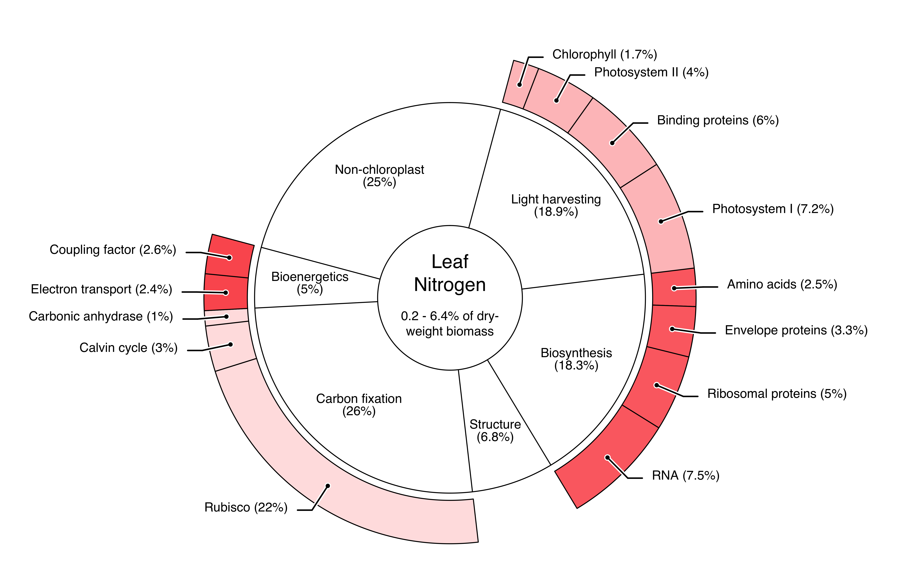
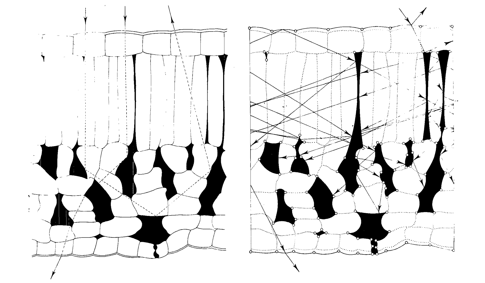
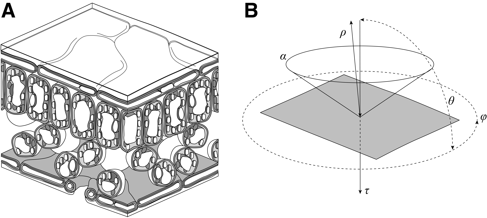
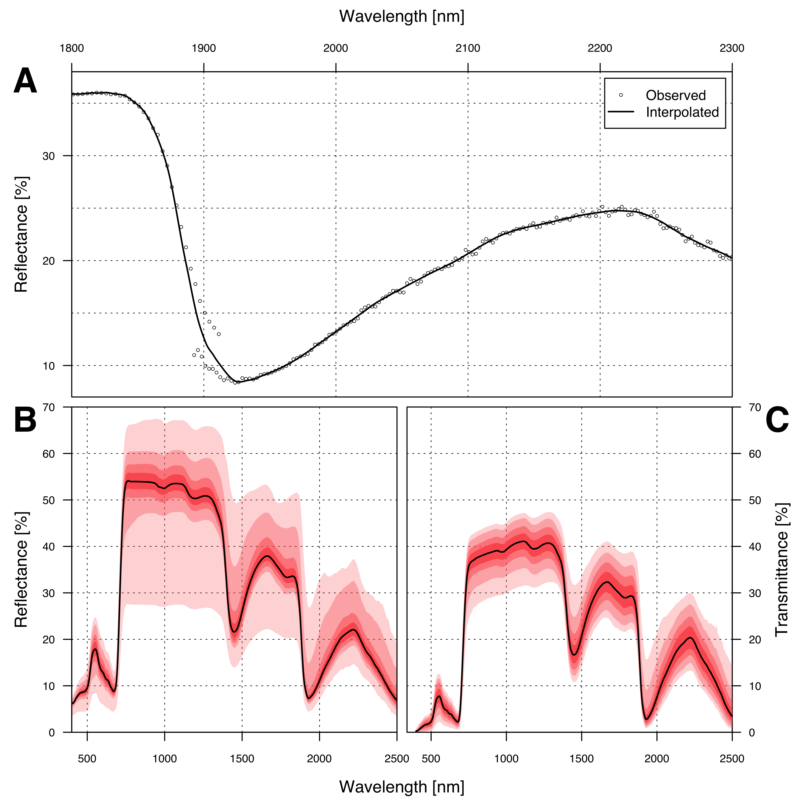
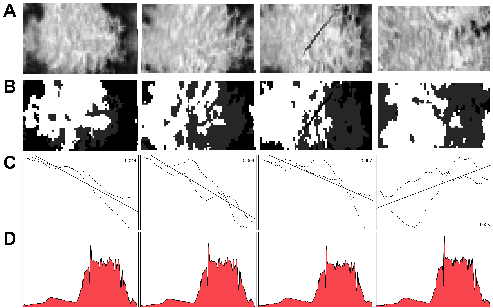
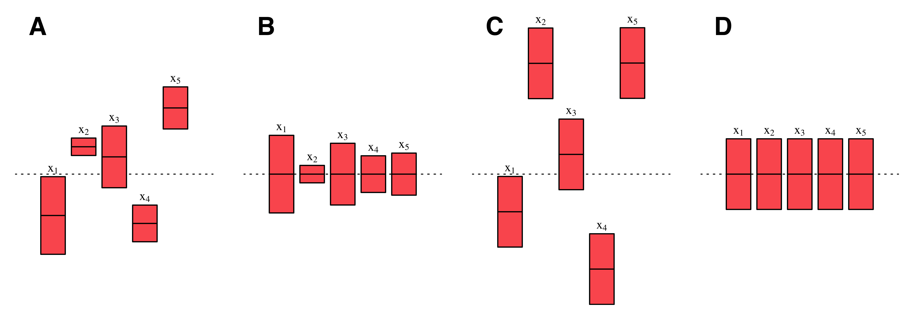
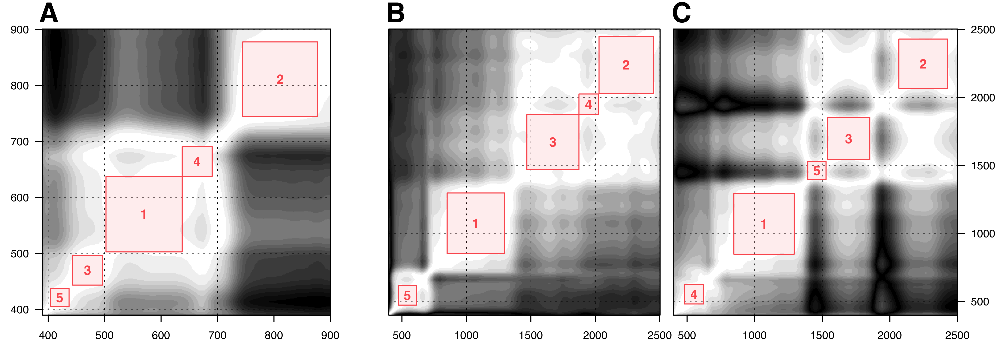
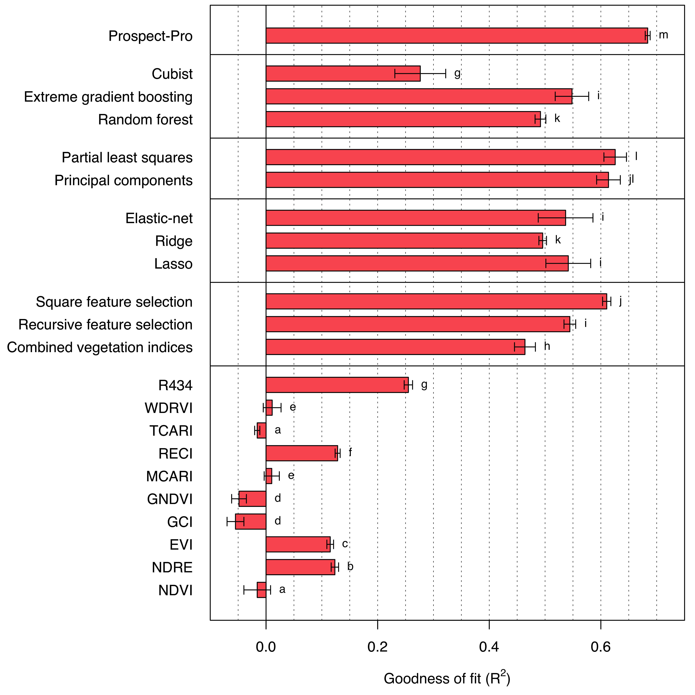
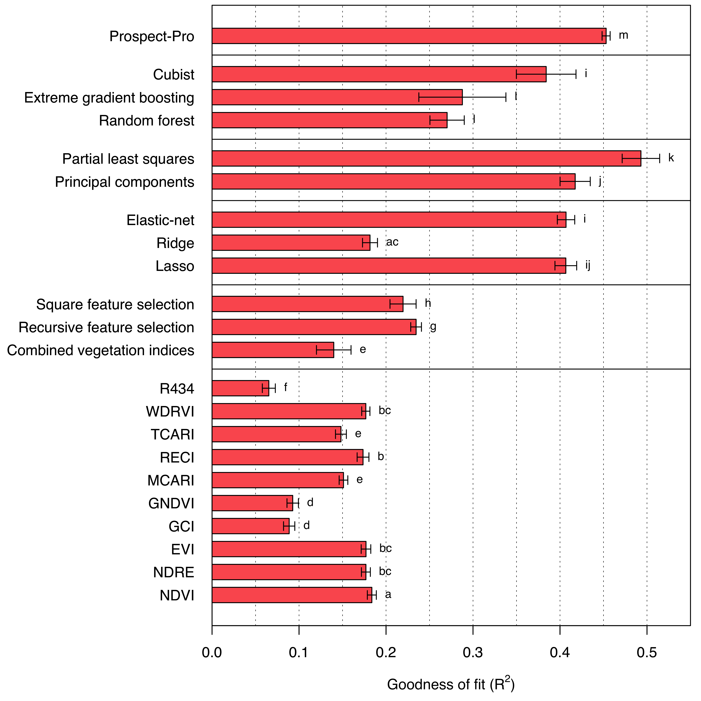

1 Background
1.1 Almond production in California
The United States of America is by far the world’s largest producer of almonds (Prunus amygdalus Batsch) with a production share of roughly 80% (CDFA 2020). Almost all of this production takes place in the state of California, whose Mediterranean climate and well-developed water infrastructure make it possible to grow the crop commercially, even though almonds are not native to the state (Bjerga et al. 2018). Almond trees have an average life span of 20 to 25 years, whereby it typically takes three to four years for a tree to begin producing fruits. The almond trees in California begin blooming mid-February through March and harvest takes place in October before the wet season starts. The crops are alternate bearing, which means that strong harvests are succeeded by weaker ones in the following year (WIFSS 2016).
One could argue that the expansion of its almond industry is California’s biggest agricultural success story (Bruno et al. 2021). Over the last three decades, the production volume increased almost eight-fold: the state produced about 1.27 million tons of almonds on 408’000 ha in 2020 (USDA 2021). The majority of the growing sites stretch along the Central Valley, most notably the counties Fresno, Kern, Stanislaus, Merced, and Madera (Figure 1). The economic value of Californian almond production sums up to a staggering 5.62 billion U.S. dollars annually. Thus, almonds rank third place among California’s agricultural commodities, trailing only the dairy and grape industries (Bruno et al. 2021).
This immense production comes at a cost. California is a comparatively dry state, where agriculture uses around 40% of the total available water supply — although that percentage varies dramatically between wet and dry years (Mount and Hanak 2016). It is estimated that Californian almond orchards alone use approximately 10% of the state’s water supply (Holthaus 2015). The scarcity of water is only expected to increase due to reduced amount of snowpack in the Sierras, depleting groundwater levels and climate change — the California Department of Water Resources expects a 10% reduction in water supply by 2040 (DWR 2022). Although discerning strong trends from climate projections is difficult, a drying trend for the Sacramento River Basin during the 21st century is observed through different climate scenarios developed (DWR 2015). As a consequence to these environmental changes, almond yields are predicted to decrease in the coming decades (Pathak et al. 2018).

These trends are likely to increase the economic pressure on almond farmers and provide incentives to take up water-saving measures. While some older orchards in California may still be irrigated using flood irrigation, 85% of the orchards use low-volume irrigation, which is much preferable for water conservation (ABC 2020). In addition to that, some farmers already adopted the use of remote sensing for a more resourceful irrigation, either using water-stress-specific vegetation indices or thermal imaging (Ihuoma and Madramootoo 2017, ABC 2020, Ceres Imaging 2022, VineView 2022).
Another serious problem stemming from the intensive agriculture in California is nitrogen leaching due to over-fertilization. The subsequent excesses of nitrate in water resources have been found to contribute to environmental degradation in the state (Viers et al. 2012). For almond orchards, it is officially recommended to apply nitrogen in four rates: 20% of the total annual application at the end of the blooming stage, 30% during fruit growth, 30% during kernel fill and at last, 20% after the hull-split or after harvest (Brown et al. 2020). Thereby, it is not uncommon in intensive almond orchards to apply up to 300 kg nitrogen per hectare and year (Smart et al. 2014), although the Almond Board of California (ABC) states that the fertilization should consider both the almond tree’s age as well as the expected kernel yield (Brown et al. 2020). As such, recommendations for best management practices range between 130 and 285 kg nitrogen per hectare and year. Thus, under a new regulation of the Californian state to avoid environmental contamination, farmers are required to apply nitrogen fertilizations appropriately (Zhang et al. 2019).
1.2 Challenges with balancing crop nitrogen
Nitrogen (\(\text{N}\)) is a vital element for plant growth. It is essential for the plant’s metabolism and is found in proteins, nucleic acids, chlorophyll, co-enzymes, phytohormones, and secondary metabolites. Plants take up nitrogen in the form of ammonium or nitrate and convert it into amino acids, either in their roots or shoots. Once inside the plant, nitrogen is transported as nitrate or amino acids (Hawkesford et al. 2012). The use of synthetic nitrogen fertilizers has drastically increased since the green revolution and has been a major driver for higher food production (Vitousek et al. 1997). However, the recovery of nitrogen from these fertilizers by plants is rather low and rarely exceeds 50% of the fertilizer input (Raun et al. 1999). The proportional uptake by plants is usually even lower in the case of organic fertilizers when compared to mineral fertilizers (Webb et al. 2013).
The resulting loss of nitrogen from agricultural systems negatively impacts non-agricultural systems, such as terrestrial, ground, and freshwater ecosystems. Through leaching, nitrogen can move to other ecosystems in the form of nitrate (\(\text{NO}_3^-\)) and cause eutrophication of surface water or contamination of drinking water (Kapoor and Viraraghavan 1997, Yang et al. 2008). Agricultural production also contributes heavily to the emission of gaseous nitrogen in the form of ammonia (\(\text{NH}_3\)), molecular nitrogen (\(\text{N}_2\)) or nitrogen oxide (\(\text{NO}_2\)) and nitrous oxide (\(\text{N}_2 \text O\)), the latter two of which are greenhouse gases and thus accelerate climate change (Stark and Richards 2008). On the other hand, nitrogen deficiency negatively affects crop yields both in terms of quantity as well as quality. Therefore, there is also a substantial economic interest to continuously monitor the nitrogen status of crops during all growth stages (Baret et al. 2007, Hank et al. 2019).
Foliar nitrogen concentrations vary a lot among plant species, phenological stages and environmental conditions, ranging between 0.2 to 6.4% of the leaf dry weight (Wright et al. 2004). The optimal nitrogen concentration in almond leaves lies between 2.2 and 2.5%—the exact value depends on the time and the targeted yield (Micke 1996). In C3 plant leaves, nitrogen is indispensable for photosynthesis, biosynthesis, carbon fixation and bioenergetics, since is a crucial element to both proteins and chlorophyll a and b (Figure 2). Chlorophyll is a key component in the light harvesting process of plants and its porphyrin core contains four nitrogen atoms, which act as a stabilizer of the central magnesium ion (Evans 1989). However, in C3 plants, chlorophyll a and b only bind 1.7% of the total leaf nitrogen (Chapin et al. 1987). Precise knowledge of the nitrogen concentration in plant leaves can be used for a more targeted fertilization and might even pave the way for variable rate fertilization (Guerrero et al. 2021). For example, one might consider the nitrogen nutrition index (NNI) introduced by Justes et al. (1994). \[ \text {NNI} = \frac{\text {N}_\%}{\text {N}_\text{crit.}} \tag{1}\] Here, N% is the measured nitrogen concentration and Ncrit. the critical nitrogen concentration. If NNI \(\geq\) 1, the crop is sufficiently (or even excessively) provided with nitrogen. Vice versa NNI \(<\) 1 implies a nitrogen deficiency. Unfortunately, the retrieval of information about the foliar nitrogen concentration via chemical analyses is generally labour and cost intensive and thus not fit for monitoring the nitrogen concentration in plants throughout their seasonal development (Berger et al. 2020). This calls for surrogate strategies of estimating the foliar nitrogen concentration — for example via remote sensing. Remote sensing of crop nitrogen for more adequate fertilization is in fact one of the core promises of precision agriculture and smart farming (Zhang et al. 2002, Walter et al. 2017, Sishodia et al. 2020).

1.3 The role of remote sensing in precision agriculture
According to Pierce and Nowak (1999), precision agriculture involves using various technologies and principles to address the spatial and temporal variability in all elements of agricultural production, with the ultimate goal of enhancing crop performance and maintaining environmental quality. As such, precision agriculture is a part of smart farming, which aims at the optimization of agricultural systems driven by digitally available information (Wolfert et al. 2017). A core driver of precision agriculture is the increasing availability of remotely sensed data as well as the means of analyzing this data (Sishodia et al. 2020). Remote sensing describes the process of acquiring information about properties of an object without physical contact to said object, i.e., the attempt to measure something from distance rather than in situ (Schowengerdt 2006). This type of data is typically measured by satellites, aircraft, or unmanned aerial vehicles (Sishodia et al. 2020).
For numerous agricultural applications, remote sensing focuses on measuring the electromagnetic radiation reflected or emitted from the Earth’s surface, primarily the reflection of sunlight in the visible and near-infrared spectrum (Jafarbiglu and Pourreza 2022). Sensors more effectively capture signals in the visible light spectrum between 380 and 750 nm wavelength because the electromagnetic radiation of the sun is the peaking there, whereas it tapers off in the ultraviolet and near- to short-wave-infrared regions (Figure 3, A).
The intensity of this electromagnetic radiation — its flux density — is typically measured in watts per square metre (W m−2, ISO 2022). If this radiation is received by a physical object, it is referred to as irradiance, if it is emitted by the object, it is called radiance. The spectral irradiance and radiance on the other hand are a measure of irradiance or radiance over a specific range of wavelengths (or frequencies) rather than across the entire electromagnetic spectrum, and thus typically measured in watts per square metre per nanometre (W m−2 nm−1, ISO 2022). The solar irradiance measured at a particular time and location depends on many parameters such as the solar incidence angle, the height above mean sea level, or the current atmospheric conditions (Blumthaler et al. 1997, Stickler and Kyle 2016). Because of that, remote sensing applications do not directly analyse the radiance — which is just as dependent on those parameters as the irradiance — but rather the so-called reflectance (\(\rho\)). Reflectance is the share of electromagnetic radiation which is reflected by a body. Consequentially, the spectral reflectance is defined as the ratio between the spectral radiance \(\Phi_{\text e, \lambda} ^\text r\) and the spectral irradiance \(\Phi_{\text e, \lambda} ^\text i\) (ISO 2022). \[ \rho_\lambda = \frac{\Phi_{\text e, \lambda} ^\text r}{\Phi_{\text e, \lambda} ^\text i} \tag{2}\]
At which exact wavelengths \(\lambda\) this reflectance is calculated depends on the available data. Data from an ordinary digital camera usually covers three bands: red (620-740 nm), green (500-560 nm), and blue (450-490 nm), which is why it is referred to as RGB imagery (Bruno and Svoronos 2005). In contrast to that, multispectral images are a type of remotely sensed data that consist of more than three bands beyond just the visible spectrum. For agricultural purposes, multispectral imagery typically combines RGB imagery with bands in the near-infrared spectrum (Hagen and Kudenov 2013). Because the infrared spectrum will be quite important within the scope of this thesis, I will often refer to certain subgroups of that range: near-infrared (NIR, 750-1400 nm), short-wavelength-infrared (SWIR, 1400-3000 nm), mid-wavelength infrared (MWIR, 3-8 \(\mu\)m), long-wavelength infrared (LWIR, 8-15 \(\mu\)m) and far infrared (FIR, 15-1000 \(\mu\)m, Byrnes 2009).

When incorporating numerous additional spectral bands into the imaging process, it is referred to as hyperspectral imaging. Hyperspectral images (HSI) usually consist of hundreds of narrow, contiguous wavelength bands, which together with the spatial resolution form a hypercube \(\mathbf X \in \mathbb R^{w \times l \times d}\) with the width \(w\), length \(l\) and the depth \(d\) (that is the number of spectral bands). The high spectral resolution is the main advantage of hyperspectral imaging, it is what allows for the detailed analysis of the chemical and physical properties of the imaged surface (Bioucas-Dias et al. 2013). This high spectral resolution however stands in a trade-off relationship with the spatial resolution, which is why hyperspectral imaging usually yields a lower spatial resolution than multispectral imaging (Yokoya and Iwasaki 2013). Sometimes, the continuous information about an object’s reflectance found solely in the spectral dimension of hyperspectral images is also referred to as its spectral signature. A very important property of the spectral dimension of hyperspectral images is the strong autocorrelation among spectral bands, which is expressed in extremely non-diagonal covariance matrices (Camps-Valls et al. 2011).
In order to to capture hyperspectral images, specialized hyperspectral cameras are used. They typically consist of a spectrograph, which separates the incoming light into its individual wavelength bands, and of an array of detectors that measure the intensity of the light in each band (El Masry and Sun 2010). The spectrograph and detectors are combined into a single, integrated unit, which is mounted on the carrying platform. These sensors work well in the visible spectrum, but the quality starts to drop in the near-infrared region and especially in the short-wave-infrared region (after 900 nm wavelength, see figure 3).
There are several reasons for this. One reason is that the near-infrared and short-wavelength infrared regions are typically characterized by lower levels of radiance compared to the visible light spectrum, which can make it difficult to obtain high-quality, noise-free data. In addition, the short-wavelength infrared region is often affected by atmospheric absorption of different gases, especially water vapour, which can cause the signal strength to vary significantly depending on the atmospheric conditions (Figure 3 A). This noise is sometimes removed using atmospheric correction algorithms (Gao et al. 2009). A third challenge in the short-wavelength infrared region is the need for specialized detectors that are sensitive to the wavelengths of light in this region. These detectors are typically made of alloys such as indium gallium arsenide or mercury cadmium telluride, which are more expensive and less sensitive than the detectors used in the visible and near-infrared regions (Ciani et al. 2020, Dyson 2021).
Due to these reasons, hyperspectral imaging of sufficient quality is often limited to the visible- and near-infrared spectrum. Acquiring exact spectral information in the short-wave-infrared spectrum is mostly reserved to spectroradiometric measurements, although this starts to change with the advancement of hyperspectral sensors (Weber et al. 2016).
1.4 Remote sensing of nitrogen
The first attempt to directly model crop nitrogen based on spectrophotometrically measured reflectance data has been made by Thomas and Oerther (1972), who worked on sweet potatoes. The authors stated:
“The regression equation at the 550 nm wavelength suggests that near the 4% nitrogen level a 1% change in reflectance would change the predicted nitrogen content by 0.2%.”
In other words, they proposed a simple linear regression model (on logarithmically transformed variables) to quickly estimate the nitrogen concentration — solely based on the reflectance at 550 nm wavelength. Back then, this relationship had to be found by calculating all band-wise correlations and simply choosing a suitable band for the regression. Ever since, much more advanced methods of modelling crop nitrogen have been developed. There are many ways to divide the modelling approaches into groups. For example, Verrelst et al. (2019) proposed grouping the methods in parametric, non-parametric, physics-based and hybrid methods. Berger et al. (2020) followed up on that division, but further distinguished between linear and non-linear methods — which they equate to the terms chemometrics and machine learning.
However, the terms parametric and non-parametric as used by Berger et al. (2020) collide with pre-occupied definitions in the field of machine learning. Furthermore, the formal definition of machine learning also applies to many of the other groups proposed by the authors. Therefore, I will use the following simplified classification throughout this thesis:
- Hand-crafted features
- Machine learning
- Radiative transfer models
The primary distinction between the first two methods lies in how the bands which are used to make predictions are selected. Hand-crafted features describe all methods which select a subset of bands or a mathematical combination thereof (as in the case of vegetation indices) which is made prior to the fitting of the regression model. Thereby, the band selection happens according to a certain imposed logic, or according to what is already used in the scientific literature. In contrast to that, the models classified as machine learning have access to the entire data, i.e., all available bands. The model automatically learns which bands or combinations of bands are the most important for accurately predicting crop nitrogen without prior information or manual feature engineering. Radiative transfer models, conversely, are primarily designed to simulate the detailed physical processes governing the transport of light and its interaction with a leaf or canopy. As a result, these models incorporate a substantial amount of prior knowledge. At this point, it is important to acknowledge that ultimately, these classifications possess a degree of arbitrariness and exhibit considerable overlap in their respective methodologies.
All three listed methods have been explored in the scientific literature, but not in comparable detail. Berger et al. (2020) found that 78 out of 125 evaluated studies that aimed to predict crop nitrogen via remote sensing relied on vegetation indices. Out of these, only a few studies have highlighted the limitations of indices-based approaches, such as their limited transferability to different sites. The studies mostly relied on the empirical relationship of certain vegetation indices to the chlorophyll content of crops, which in turn is related to nitrogen (Peñuelas et al. 1994, Baret et al. 2007). The application of machine learning for crop nitrogen estimation was also investigated by numerous studies, where the most often applied model was the partial least squares regression model. Radiative transfer models on the other hand have only been used in three studies for modelling crop nitrogen (Berger et al. 2020).
Crop nitrogen or nitrogen content are both ambiguous terms, although very commonly used in the scientific literature. Ever since Thomas and Oerther (1972) pioneered remote sensing of nitrogen, the focus lied on two different measurements: mass- and area-based nitrogen (Wright et al. 2004). Mass-based nitrogen (N%) is the nitrogen concentration in the leaves, typically relative to the leaf dry weight. Area-based nitrogen (Narea) describes how much nitrogen is present in the biomass over a certain area. The two measures are linked together by the leaf mass per area (LMA), which is a widely used morphological trait that indicates good plant growth and functioning (de la Riva et al. 2016). \[ \text N_{\text{area}} = \text{LMA} \times \text N_{\%} \tag{3}\]
The majority of the contemporary studies focus on multi- or hyperspectral data. However, there is still some ongoing research about the usage of broadly available and low cost RGB imagery for predicting nitrogen content in crops, although with no great success (Schirrmann et al. 2016, Zheng et al. 2018, Fu et al. 2020).
Within the visible light spectrum, three types of plant pigments mainly determine the absorption process and thus the leaf colour: chlorophylls, carotenoids, and anthocyanins. Chlorophylls include chlorophyll a and b with their respective absorption bands, while carotenoids (e.g., \(\beta\)-carotene and xanthophyll) and anthocyanins include numerous compounds (Féret et al. 2008). Out of these pigments, only chlorophyll is directly connected to nitrogen. It accounts for roughly 1.7% of total leaf nitrogen, which explains the rather loose Pearson correlation (\(\rho = 0.65 \pm 0.15\)) between the chlorophyll and the nitrogen concentration in leaves (Kokaly et al. 2009, Homolová et al. 2013). It remains to be noted that the Pearson correlation might not be the best metric to compare nitrogen and chlorophyll, as Padilla et al. (2018) have found a second order polynomial model to slightly improve the model fit.
Fully relying on chlorophyll for the remote sensing of crop nitrogen is highly limited and can even be misleading. First, the prediction will always be limited to the correlation between the two traits. Also, the relationship between chlorophyll and nitrogen changes over time, as nitrogen is reallocated from the vegetative organs to reproductive structures during the reproductive stage (Ohyama 2010). Finally, a lack of chlorophyll cannot certainly be ascribed to a nitrogen deficiency but also any other chlorosis-causing nutrient deficiency (Bloem et al. 2005, Asner and Martin 2009).
Due to these reasons, leaf protein content would be a more stable proxy for the foliar nitrogen concentration (Berger et al. 2020). The majority of plant nitrogen is bound to protein (Figure 2), thus there is less room for decoupling between the two traits (Kokaly et al. 2009).
1.5 Aims and structure of this thesis
In this master’s thesis, I pursue two primary objectives: First, I aim to gain a comprehensive understanding of the various methods for modelling crop nitrogen, as outlined in the previous section. Second, I search for a model capable of effectively mapping the spectral signature of almond canopies or leaves with their respective nitrogen concentrations, while maintaining generalizability across diverse temporal variations, including different times of the year, distinct years, and varied geographical locations.
With these goals in mind, the thesis is structured as follows: The first part delves into each of the approaches previously introduced. Chapter 2 examines remote sensing of nitrogen using vegetation indices. Chapter 3 is dedicated to selected machine learning algorithms suitable for hyperspectral data analysis. Chapter 4 investigates physics-based radiative transfer models, beginning at the leaf level and progressing to the canopy level.
Please note that this thesis does not include a systematic literature review and, as such, does not claim to be complete with respect of the modelling methods regarded. For instance, the radiative transfer models discussed in chapter 4 represent merely a small subset of the available models. Instead, the primary objective is to understand the underlying principles as well as the distinctions among the three techniques.
This thesis resulted in a collaboration with the Digital Agriculture Laboratory at the University of California, Davis, which is led by Dr. Alireza Pourreza. The lab’s members collected data from a Californian almond orchard prior to my involvement; however, the data was highly unstructured. Consequently, a portion of this thesis’ workload involved cleaning and pre-processing the data, which is described in detail in chapter 5.
The modelling stage is documented in chapter 6, and the model performance results are presented in chapter 7. An in-depth discussion regarding the model’s generalizability and other relevant topics can be found in chapter 8, with concluding remarks in chapter 9.
2 Vegetation-indices-based methods
Vegetation indices are mathematical constructs — typically expressed as ratios — that are derived from the measurement of vegetation reflectance at two or more specific wavelengths (Huete et al. 2002). These indices are frequently employed to evaluate the health, biophysical properties, and biochemical characteristics of vegetation. Notably, vegetation indices have been utilized for applications such as estimating plant parameters such as the leaf area index, detecting water stress in crops, and classifying various types of vegetation for weed mapping purposes (Jackson et al. 1981, Zheng and Moskal 2009). Of particular relevance to the subject of this thesis, they have also been commonly employed for estimating chlorophyll and nitrogen content in crops (Berger et al. 2020). Precision agriculture technologies relying on vegetation indices have been well-integrated into commercial applications, an outcome that can likely be attributed to the simplicity of their implementation and their comparatively early development (Xue and Su 2017, Sishodia et al. 2020).
2.1 Evolution of vegetation indices and their limitations
Historically, one of the very first vegetation indices developed was the simple ratio index (RVI). It was proposed by Jordan (1969). \[ \text{RVI} = \frac{\rho_\text{R}}{\rho_\text{NIR}} \tag{4}\] In this and the following equations, \(\rho_\text{R}\) stands for the red band reflectance, whereas \(\rho_\text{NIR}\) stands for the near-infrared band reflectance. Not too soon after introduction of the RVI, Rouse Jr et al. (1973) proposed the normalized difference vegetation index (NDVI), which until today remains the most widely used vegetation index (Xue and Su 2017). \[ \text{NDVI} = \frac{\rho_\text{NIR}-\rho_\text{R}}{\rho_\text{NIR}+\rho_\text{R}} \tag{5}\] Compared to the RVI, the NDVI is normalized between the values of −1 and +1. It is quite sensitive to green vegetation, even in sparsely covered areas. However, the NDVI is also influenced by soil colour, brightness, and shadows cast by canopy and clouds, which are undesirable traits for a vegetation index, as it should ideally be affected solely by the presence of vegetation (Xue and Su 2017). Consequently, numerous vegetation indices have been developed subsequent to the NDVI, aiming to address its limitations and incorporate atmospheric corrections (Kaufman and Tanre 1992, Ren-hua et al. 1996) or adjustments for soil colour and brightness (Richardson and Wiegand 1977, Huete 1988, Baret et al. 1993, Qi et al. 1994). A recent review by Xue and Su (2017) examined over one hundred vegetation indices, with many specifically targeting the shortcomings of the NDVI. The authors discovered that, in various specific scenarios — considering factors such as a particular crop, soil type, and atmospheric conditions — certain vegetation indices demonstrated superior performance over others.
Early development of vegetation indices primarily relied on bands frequently captured by multispectral cameras, such as red, red edge, and near-infrared wavelengths (Chlingaryan et al. 2018). Blue bands were rarely employed, as blue light is more susceptible to atmospheric scattering, which can introduce greater uncertainty in measurements — an aspect of particular significance in satellite-based remote sensing applications. However, the advent of hyperspectral imaging has ushered in the creation of vegetation indices tailored to very specific narrow bands, expanding the capabilities of these tools — but at the same time massively increasing the risk of over-fitting (Thenkabail et al. 2013).
In the end, relationships between vegetation indices and the trait of interest are purely empirical in nature. Typically, data on the plant trait is collected, and various vegetation indices are tested to determine the ones that correlate well with it. This approach can be critiqued as being somewhat unscientific, as it relies more on coincidentally found correlations than on fundamental principles or theories.
Atzberger et al. (2011) explicitly outlines five disadvantages associated with using vegetation indices-based methods for crop nitrogen estimation. The first disadvantage is the inverse problem, wherein high-dimensional data is reduced to a single value, which could potentially be derived from varying forms of reflectance. The second drawback involves the partial exploitation of multi- or hyperspectral data, as only a limited number of spectral bands are utilized. This issue is especially relevant to narrow-band vegetation indices, which may also be affected by measurement noise. The third challenge concerns the lack of transferability in the calibration of vegetation indices to specific sensors, as it does not extend to instruments with different characteristics. The fourth issue relates to overfitting, implying that vegetation index-based nitrogen models may be tailored too specifically to the dataset used for model calibration. This can lead to sensitivity regarding crop type, growth stage, underlying soil type, sun-sensor constellation, as well as time and date. Finally, the fifth drawback highlights the need to collect in situ reference data for model establishment, which demands manpower, instrument availability, and therefore imposes a high financial burden on the development.
Despite this criticism, new vegetation indices keep being proposed in the scientific literature. Some of the drawbacks of vegetation indices are addressed by the usage of radiative transfer models: Synthetic data sets are generated, where new vegetation indices aim to correlate with the parameter used to generate the respective data sets (Hunt Jr et al. 2013). For example, the radiative transfer model Prosail has been used to design new vegetation indices (Cheng et al. 2014, Jin et al. 2014). This search for new vegetation indices is sometimes even implemented algorithmically, for example by the adoption of = algorithms (Costa et al. 2020).
2.2 Nitrogen monitoring with vegetation indices
Vegetation indices represent the most prevalent method for remote detection of crop nitrogen content (Berger et al. 2020). Numerous indices have been intentionally designed to estimate crop nitrogen, while others have simply been found to correlate with it (Herrmann et al. 2010). These indices mostly capitalize on the correlation between crop nitrogen and chlorophyll content (Baret et al. 2007). For instance, the transformed chlorophyll absorption in reflectance index (TCARI) has demonstrated a strong correlation with chlorophyll (Cui and Zhou 2017). Some of the most notable vegetation indices employed for crop nitrogen detection can be found in table 1.
But how exactly is a regression model employing vegetation indices constructed? The utilization of vegetation indices on multi- or hyperspectral data results in a dimensionality reduction of the original data. While the initial data possesses multiple dimensions, vegetation indices are one-dimensional. Ideally, a vegetation index employed for crop nitrogen monitoring correlates more strongly with crop nitrogen than any individual band. However, the index itself lacks a unit and, as a consequence, cannot be used directly to estimate crop nitrogen. Therefore, any vegetation index must be linked to the trait of interest \(y\) through a connecting function \(f\) — a so-called link function. \[ f: g(\mathbf x) \rightarrow y \tag{6}\] In this case, \(g(\mathbf x)\) represents the vegetation index applied to the spectral data. Typically, a simple linear regression is employed to identify the linking function \(f\). Nevertheless, \(f\) could represent any function and might even accept multiple vegetation indices as inputs. For instance, Johnson et al. (2016) found that a multiple linear regression model yielded better predictions based on multiple vegetation indices than relying on a single vegetation index at a time.
The linking function \(f\) could even take the form of a more flexible machine learning model able to represent intricate interactions, such as a random forest or support vector machines (Sonobe et al. 2018). This practice, however, raises the question of the necessity for vegetation indices in the first place. Machine learning models can be applied directly to the data, enabling the direct selection of relevant features. One could, so to say, “cut out the middleman”. This effectively eliminates several of the issues addressed by Atzberger et al. (2011). Hence, the application of machine learning algorithms to hyperspectral data in order to estimate crop nitrogen will be the focus of the next chapter.
| Index | Formula | Author |
|---|---|---|
| Normalised Difference Vegetation Index (NDVI) | \[\frac{\rho_{\text{790}}-\rho_{\text{685}}}{\rho_{\text{790}}+\rho_{\text{685}}}\] | Rouse Jr et al. (1973) |
| Normalized Difference Red Edge (NDRE) | \[\frac{\rho_{790} - \rho_{720}}{\rho_{790} + \rho_{720}}\] | Barnes et al. (2000) |
| Modified Chlorophyll Absorption in Reflectance Index (MCARI) | \[\frac{\rho_{700}}{\rho_{670}} \left[ 0.8 \cdot \rho_{700} - \rho_{670} - 0.2 \cdot \rho_{550} \right]\] | Daughtry et al. (2000) |
| Transformed Chlorophyll Absorption in Reflectance Index (TCARI) | \[3 \left[ \rho_{700} - \rho_{670} - \frac{0.2\cdot\rho_{700}}{\rho_{670}} \left(\rho_{700} - \rho_{550} \right) \right]\] | Haboudane et al. (2002) |
| Green Chlorophyll Index (GCI) | \[\frac{\rho_{\text{790}}}{\rho_{530}}-1\] | Gitelson et al. (2003) |
| Red Edge Chlorophyll Index (RECI) | \[\frac{\rho_{\text{790}}}{\rho_{\text{720}}}-1\] | Gitelson et al. (2003) |
| Green Normalised Difference Vegetation Index (GNDVI) | \[\frac{\rho_{\text{790}}-\rho_{530}}{\rho_{\text{790}}+\rho_{530}}\] | Gitelson et al. (1996) |
| Enhanced Vegetation Index (EVI) | \[\frac{\frac{5}{2}(\rho_{\text{790}} - \rho_{\text{720}})}{\rho_{\text{790}} + 6 \ \rho_{\text{720}} + \frac{15}{2} \rho_{\text{470}} + 1}\] | Huete et al. (2002) |
| Wide Dynamic Range Vegetation Index (WDRVI) | \[\frac{\alpha \rho_{\text{790}}-\rho_{\text{720}}}{\alpha \rho_{\text{790}}+\rho_{\text{720}}}\] | Gitelson (2004) |
| Normalized Difference Nitrogen Index (NDNI) | \[\frac{\log_{10} \rho_{1510}^{-1} - \log_{10} \rho_{1680}^{-1}}{\log_{10} \rho_{1510}^{-1} + \log_{10} \rho_{1680}^{-1}}\] | Serrano et al. (2002) |
| R434 | \[\frac{\rho_{\text{434}}}{\rho_{\text{496}} - \rho_{\text{401}}}\] | Tian et al. (2011) |
3 Machine learning methods for hyperspectral data analysis
The term machine learning was first used by Samuel (1959). He described it as the “field of study that gives computers the ability to learn without being explicitly programmed”. Back then, only few people were interested in this particular field. Today, however, this could not be further from the truth: A quick Scopus search reveals, that in 2022 alone, 18’464 scientific publications use the term “machine learning” in their title — that is more than 50 publications a day!1
1 The Scopus search for machine AND learning was conducted on March 7, 2023. Only the document type “article” was searched for. 449’663 publications of all time contain “machine learning” in their title, abstract or keywords. 57’926 contain “machine learning” in the title only. Out of all the articles ever using “machine learning” in their title, 32% were published in 2022.
The substantial advancements witnessed in machine learning over the past two decades can be largely ascribed to the surge in computational power, the sudden availability of copious amounts of data, and the open-source culture that enables applications through readily accessible machine learning libraries and frameworks (Jordan and Mitchell 2015, Fridman 2019).
In this thesis, I will use the term “machine learning” as originally defined by Arthur Samuels. As per his definition, machine learning includes a variety of mathematical models from chemometrics and statistics, despite the fact that many of these models were developed prior to the coining of the term itself. The essential aspect of these models lies in their primary function for making predictions, rather than serving as statistical models. Moreover, the machine learning models evaluated in this thesis are differentiated from hand-crafted features such as vegetation indices and radiative transfer models by their fully automatic process of selecting and combining spectral bands.
Owing to their exceptional predictive capabilities and handling of high-dimensional input data, machine learning algorithms have emerged as a widely adopted tool for modern hyperspectral image analysis (Gewali et al. 2018). In this chapter, various machine learning algorithms that have been extensively used on hyperspectral data will be examined. To do this, I will loosely follow the route taken by James et al. (2013), commencing with the ordinary least squares model and addressing why it is a poor choice for hyperspectral data, and subsequently slowly relaxing the assumptions of the linear model.
3.1 Ordinary least squares and stepwise selection
The simplest and also probably most prevalently used machine learning model is the linear regression model (Yan and Su 2009). In its univariate form, it can be represented as follows. \[ \mathbf y = \mathbf X \boldsymbol \beta + \boldsymbol \varepsilon \tag{7}\] Here, \(\mathbf y\) represents the labels, \(\mathbf X\) denotes the design matrix comprising all predictors, \(\boldsymbol \beta\) signifies the coefficients, and \(\boldsymbol \varepsilon\) corresponds to the model’s errors. The customary approach for estimating the coefficients \({\boldsymbol \beta}\) in equation 7 employs the analytical solution using the ordinary least squares estimator. \[ \hat {\boldsymbol \beta} = (\mathbf X^\top\mathbf X)^{-1} \mathbf X^\top \mathbf y \tag{8}\] This method was (allegedly) introduced independently by Legendre (1806) in Nouvelles méthodes pour la détermination des orbites des comètes (new methods for the determination of comet orbits) and Gauss (1809) in Theoria Motus Corporum Coelestium (theory of the motion of the heavenly bodies), eventually being formalized at a later date by Markov (1912). However, it is worth noting that Markov did not contribute any novel proof (Plackett 1949, Yan and Su 2009).
In what is now known as the Gauss-Markov theorem, Markov asserts that the ordinary least squares estimator is the best linear unbiased estimator under the specific conditions that the error’s expectation is zero (\(\mathbb E(\varepsilon_i) = 0\)), the error exhibits equal variance (\(\text{Var}(\varepsilon_i) = \sigma^2\)), and all distinct error terms are uncorrelated (\(\text{Cov}(\varepsilon_i, \varepsilon_j) = 0\)).
Unprocessed hyperspectral reflectance data frequently violates the assumptions of the Gauss-Markov theorem — particularly the third assumption regarding uncorrelated errors. While equal variance can be achieved through z-score normalization (a technique described in more detail in section 5.4), and the expectation of zero error might be satisfied if the response is investigated on a small enough scale, the assumption of uncorrelated error terms cannot be fulfilled while retaining all available variables or information about all bands. The crux of the problem lies in so-called multicollinearity: the reflectance of neighbouring spectral bands is typically very strongly correlated. Consequently, the reflectance at one band can be predicted linearly from others with a very high precision (Chlingaryan et al. 2018). Because of multicollinearity, minor changes in the data or model specification can have a disproportional effect on parameter estimates (Ravikanth et al. 2017).
Ordinary least squares also encounter difficulties in hyperspectral data analysis due to the small n, large p problem. In many agricultural applications of hyperspectral data, there is often a limit to the number of samples taken, since the acquisition of observations can be both costly and labour-intensive (Ravikanth et al. 2017). When the design matrix \(\mathbf X\) has fewer rows (observations, \(n\)) than columns (parameters, \(p\)), the inversion of \(\mathbf X^\top\mathbf X\) in equation 8 becomes impossible.
If one wanted to strictly stick to linear regression using ordinary least squares, a potential workaround evading the small n, large p problem would be the application of a prior feature selection strategy to tackle multicollinearity (remember, vegetation indices as discussed in the chapter before essentially constituted such a feature selection method). Provided that there are more observations than parameters to estimate, feature selection methods like stepwise selection can also further create a subset of variables for the linear regression model such that it is no longer over-specified. These methods minimize a so-called information criterion. This metric balances both the model’s likelihood and penalizes over-parametrization simultaneously. The Akaike information criterion (AIC), introduced by Akaike (1998), serves as one such criterion for comparing the fit of various regression models. It can be calculated as follows. \[ \text{AIC} = k(p - \ln \hat {L}) \tag{9}\] In this equation, \(p\) represents the number of parameters, \(k\) is a scalar, and \(\ln \hat {L}\) denotes the estimated log-likelihood of the model. A true AIC is obtained when \(k=2\), while \(k=\ln(n)\) (where \(n\) is the number of observations) is sometimes called the Bayesian information criterion (BIC) or Schwarz information criterion (SIC). Through stepwise selection, variables are iteratively added to and removed from the model so as to minimize the information criterion.
A practical application of this approach can be seen in the research conducted by Castaldi et al. (2016). The authors focused on predicting wheat grain nitrogen uptake from satellite data. To identify a suitable subset of spectral bands, they executed a stepwise selection process on the variables of a multiple linear regression model.
However, the application of stepwise selection to hyperspectral data has faced substantial criticism (Bolster et al. 1996, Grossman et al. 1996). The key issue is that its performance markedly declines as the number of utilized bands increases. When dealing with a too large number of variables, stepwise selection begins to select a seemingly random subset of bands for linear regression, which subsequently results in overfitting (Hastie et al. 2017). In situations where a linear regression model incorporating more than a handful of bands is sought, regularization of the model may prove to be a more suitable solution.
3.2 Regularization
Regularization is a technique extensively employed in machine learning in order to avoid overfitting and enhance the generalization of models. Applicable to linear models as well as more intricate ones, such as neural networks or decision-tree-based models, regularization operates by adding a penalty term to the original, unregularized cost function \(J\), which in turn penalizes the magnitude of the estimated coefficient. Consequently, larger coefficient estimates lead to a greater penalty (James et al. 2013). This process forces the regression model to strike a balance between small (or few) coefficients and an effective explanation of the data. In that sense, regularization can be understood as Occam’s Razor2 applied to machine learning models, favouring simpler models over their more complex counterparts — even if the more complex ones could better explain the data. The underlying reasoning for this approach is that, when given enough flexibility, models inherently tend to over-explain the data. As a countermeasure, regularization restricts some of that flexibility, promoting a more balanced model.
2 Occam’s razor is a philosophical principle that suggests that, among competing hypotheses, the simplest one with the fewest assumptions is preferable or more likely to be true (Van den Berg 2018).
The penalty term is typically based on various vector norms of the model coefficients, such as the \(\ell^1\)-norm (referred to as lasso regularization) or the \(\ell^2\)-norm (known as ridge regularization). The cost function \(J\) for both lasso and ridge regression can be expressed in a single equation as follows. \[ J(\boldsymbol \beta, \mathbf X, \mathbf y) = \| \mathbf {y -X\boldsymbol\beta} \|_2^2 + \lambda \left[ \frac{1}{2}(1-\alpha)\| \boldsymbol \beta \|_2^2 + \alpha \| \boldsymbol \beta \| \right] \tag{10}\] Here, \(\| \cdot \|\) represents the absolute value norm or the \(\ell^1\)-norm, while \(\| \cdot \|_2\) denotes the Euclidean norm or the \(\ell^2\)-norm. It is worth noting that the first term in equation 10 (\(\| \mathbf {y -X\boldsymbol\beta} \|_2^2\)) is simply the standard cost function for linear least squares regression, as it equates to the sum of squared errors. The second half constitutes the penalty term that regularizes the coefficients. The parameter \(\lambda\) determines the magnitude of the penalty, as it is multiplied by a mixture of norms of the coefficient vector \(\boldsymbol \beta\). If one exclusively selects \(\alpha = 0\), that results in ridge regression, since only the \(\ell^2\)-norm is employed. Conversely, choosing \(\alpha = 1\) relies solely on the \(\ell^1\)-norm, resulting in lasso regression. Any value between \(0 < \alpha < 1\) yields a combination of the two, referred to as the elastic net (Zou and Hastie 2005, James et al. 2013). Consequently, we can regard \(\lambda \in [0, \infty)\) as a parameter controlling the penalty’s magnitude and \(\alpha \in [0,1]\) as a parameter directing the type of regularization applied.
In general, regularization aids in mitigating multicollinearity issues, consequently reducing the variance of coefficient estimates. Ridge regression, based on the Euclidean norm, progressively decreases the penalty on coefficient estimates as they approach zero. This means, that for ridge regression, the variables in the model will always exert an effect, albeit a tiny one in the case of useless variables.
Lasso regression on the other hand, initially introduced by Tibshirani (1996), begins to induce sparsity in the data matrix as \(\lambda\) increases (James et al. 2013). This property means that lasso regression leads to a selection of variables that effectively explain the response. Unlike stepwise selection, lasso regression does not suffer from a high number of simultaneously used variables (Hastie et al. 2017). Lasso regression emerges as a particularly appealing tool for hyperspectral data analysis, as it facilitates the selection of a limited number of bands that best explain the response variable (Takayama and Iwasaki 2016).
The number of selected bands can be effectively controlled via \(\lambda\). Lasso regression has already been employed for spectral band selection in spectroradiometric leaf-level data, specifically in the context of foliar nitrogen prediction in vineyards (Omidi et al. 2020).
3.3 Dimensionality reduction regression
Thus far, the focus has been on regression methods that address multicollinearity and the small \(n\), large \(p\) problem by selecting features, penalizing coefficients, or both, as in the case of lasso regression. An alternative approach to tackling these issues involves formulating the regression after applying a dimensionality reduction technique. Principal component regression (PCR) and partial least squares regression (PLSR) stand out as the two most prominent methods for achieving this. Partial least squares, originally introduced by Wold et al. (1984), is particularly prevalent in chemometrics, even though it was initially introduction as an econometric tool for addressing multicollinearity (Geladi and Kowalski 1986, Mehmood and Ahmed 2016).
The two related methods can be mathematically expressed in a similar manner. Any design matrix \(\mathbf X\) containing the original data can be represented by its score matrix \(\mathbf T\). \[ \mathbf T = \mathbf{XW} \tag{11}\] Here, \(\mathbf W\) is a \(p \times p\) rotation matrix of weights. In the case of principal component analysis (PCA), the columns of \(\mathbf W\) are the eigenvectors of \(\text{Cov}(\mathbf X)\). The full matrix \(\mathbf T\) is thus a linear re-combination of \(\mathbf X\), but it conveniently contains maximal information in its first column, with the remaining information successively distributed in subsequent columns. The constructed variables in the score matrix, called principal components, are completely uncorrelated with each other. These principal components, also referred to as latent variables, are not directly measured but are constructed from the observed variables.
The lack of multicollinearity among the latent variables in the score matrix makes them better suited for ordinary least squares regression than the observed data. The more collinear the original data, the fewer principal components are needed to capture the essence of the data. This effectively eliminates the small \(n\), large \(p\) problem. After performing linear dimensionality reduction on \(\mathbf X\), linear regression can be applied to a limited number of variables in the score matrix \(\mathbf T\) to avoid overfitting issues typically associated with stepwise selection (Grossman et al. 1996, Hansen and Schjoerring 2003). Both principal component and partial least squares regression can thus be formulated as follows. \[ \mathbf y = \mathbf T_{[1,l]} \: \boldsymbol \beta + \boldsymbol \varepsilon \tag{12}\] Here, \(l\) is the number of variables from \(\mathbf T\) used for the regression, and the rest is analogous to equation 7. The difference between principal component and partial least square regression lies in how the score matrix \(\mathbf T\) and the rotation matrix \(\mathbf W\) are estimated. In principal component regression, a principal component analysis is performed without considering the response \(\mathbf y\), but instead maximizing the variance in the columns of the score matrix \(\mathbf T\) successively. However, this strategy could theoretically find principal components which explain maximal variance in the data, but do not in fact correlate with the labels (Geladi and Kowalski 1986).
Partial least squares regression, introduced by Wold et al. (1984), addresses this issue by informing the estimation of the rotation matrix with both the labels and the data at the same time, thus maximizing the predictive power of the latent variables. Specifically, partial least squares estimate \(\mathbf W\) to maximize the covariance between \(\mathbf y\) and \(\mathbf T\): \[ \mathbf W = \arg \max_{\mathbf W} \left\{ \text{Cov} \left( \mathbf y, \mathbf {XW} \right) \right\} \qquad\text{s.t. } \mathbf W ^\top \mathbf W = \mathbf I \tag{13}\] In this equation, \(\mathbf I\) represents the identity matrix (Bennett and Embrechts 2003). Note that equation 13 describes the maximization task for univariate partial least squares, applicable to cases with a single response variable, although the model can also be applied to multivariate cases, where a rotation matrix is found to maximize the covariance of the principal components with respect to multiple responses simultaneously.
In summary, principal component regression maximizes the variance of the principal components with respect to \(\mathbf X\) and subsequently performs a regression on \(\mathbf y\). In contrast, partial least squares regression maximizes the covariance between the components \(\mathbf T\) and the independent variable \(\mathbf y\). Therefore, if the primary goal is to make predictions using linear regression analysis, partial least squares regression is generally a better alternative compared to principal component regression (Inoue et al. 2012, Liu et al. 2022).
Due to these properties, partial least squares regression is an excellent method for predicting a response based on hyperspectral data. It is also the most widely tested model for predicting crop nitrogen (Berger et al. 2020). For instance, partial least squares were successfully used by Wang et al. (2017) to predict nitrogen in leaves from pear trees, with a validation R2 value of 0.85.
However, there are two major weaknesses to the partial least squares approach when it comes to hyperspectral data that must be considered. First, the regression method utilizes the entire spectrum of the original variables to construct the latent variables. While this can provide some insights into which bands are more explanatory for the response, it is not as straightforward as other methods for selecting a minimum number of relevant bands that can adequately explain the response. Band selection via partial least squares requires additional analysis of the model (Mehmood and Ahmed 2016). Second, partial least squares regression is inherently linear in nature. As a result, despite its powerful capabilities in modelling linear relationships, it may fail to capture complex, non-linear relationships present in the data — relationships that are known to exist between the foliar nitrogen concentration and the leaf’s reflectance.
When the underlying structure of the data is strongly non-linear, principal component and partial least squares regression may not produce satisfactory results. In such cases, their kernelized counterparts can be explored, which allow for non-linear dimensionality reduction before the regression stage (Rosipal and Krämer 2006). Alternatively, other machine learning techniques, such as decision-tree-based models, Gaussian process regression, support vector regression, or artificial neural networks, might be more appropriate for modelling intrinsically non-linear relationships.
3.4 Decision-tree-based learning
Decision-tree-based methods are vastly different from the machine learning algorithms examined thus far. A decision tree can be constructed by recursively partitioning the data into subsets based on the values of individual features, and then establishing individual rules for the created subsets. The paths in these trees are called branches, and the terminal nodes are called leaves (James et al. 2013). Decision trees can be employed for both classification and regression; however, since the focus of this thesis is the prediction of foliar nitrogen concentration, the discussion will centre on regression trees. Decision-tree-based learning has been widely utilized in various applications, including remote sensing applications for nitrogen detection (Chlingaryan et al. 2018).
When used individually, decision trees often either overfit the data or fail to effectively approximate the underlying function. However, their power is significantly enhanced when employed in ensemble learning, which combines multiple trees to improve performance. Two popular ensemble methods include bagging, where trees are trained on randomly selected subsets of the data, and boosting, where trees are iteratively trained to correct the errors of their predecessors (James et al. 2013).
One of the most prevalent bagging methods is random forests, a model introduced by Breiman (2001). Each tree within a random forest is trained on only a subset of the observations and a limited number of variables, which allows less informative variables to influence the outcome as well. Predictions made by a random forest are simply the mean of all individual predictions of decision trees (James et al. 2013). Random forests have been employed by Jin et al. (2020) due to their exceptional capability of handling non-linear relationships in order to determine which variables are essential for yield determination in Californian almonds.
As an alternative to bagging and random forests, the technique of boosting combines multiple weak learners, which are decision trees that perform only slightly better than random guessing, into a robust model capable of making accurate predictions (James et al. 2013). The key aspect of this approach is that weak learners are fitted sequentially, with new trees attempting to reduce the error of their predecessors. Consequently, subsequent learners focus on the aspects that previous learners failed to capture. The final model is a weighted sum of the individual weak learners, with the weights determined by each learner’s relative performance. One of the latest examples of boosting is the extreme gradient boosting (XGBoost) framework, introduced by Chen and Guestrin (2016). This particular algorithm has proven particularly useful for predicting the foliar nitrogen concentration of grapevines in California (Moghimi et al. 2020).
A third variation of ensemble learning with decision trees are cubist trees, which incorporate linear regression models as node rules. This adds flexibility to the model, making the response a linear function at any point — unlike the prior two models, which are essentially limited to always be step functions.
In general, decision-tree-based learning can be particularly effective when applied to hyperspectral data, as the trees can manage numerous dimensions and automatically select the most relevant bands at each node. They can adeptly handle non-linear relationships, a capability that some previously discussed methods lack. Additionally, their hierarchical structure is easy to understand and interpret, reflecting the decision-making process in a clear and comprehensible manner. This advantage enables drawing conclusions about the importance of specific variables for prediction, making decision-tree-based learning useful for spectral band selection, especially in classification tasks (Omidi et al. 2020).
Decision-tree-based methods have the notable drawback in that they tend to be considerably slower during the inference stage compared to other models. Remember that when making predictions with an ensemble method, all the trained models need to calculate the result, which can contribute to a longer computation time compared to other models. This disadvantage becomes especially apparent when predictions must be for every pixel in a hyperspectral image which may potentially require billions of predictions. Additionally, in regression, decision-tree-based learning may suffer from the fact that they generate inherently non-smooth functions. If smooth non-linear functions are required, methods such as support vector regression, Gaussian process regression or even artificial neural networks might be more suitable alternatives.
3.5 Deep learning
Much of today’s remarkable advances in the field of machine learning are largely based on a group of models called artificial neural networks. These models power the most advanced artificial intelligence systems, which effortlessly outperform humans in chess, Go, or video games (Silver et al. 2017, Vinyals et al. 2019, Noda 2023). Artificial neural networks are also applied in various scientific domains, such as chaos control in fusion reactors (Degrave et al. 2022) or for highly accurate protein structure prediction (Jumper et al. 2021). In addition, artificial neural networks have made a significant impact in recent years in the form of generative artificial intelligence that can produce images, audio, or text (Rombach et al. 2021, OpenAI 2023). Some researchers even believe that the largest neural networks exhibit sparks of artificial general intelligence — that is artificial intelligence with human-like understanding and adaptability (Bubeck et al. 2023).
Artificial neural networks are a type of machine learning algorithm that is loosely inspired by the structure and function of the human brain. The concept of artificial neural networks pre-dates many of the other models discussed so far: the so-called perceptron was formally introduced by Rosenblatt (1958), with similar ideas dating as far back as to McCulloch and Pitts (1943). Neural networks consist of multiple layers of interconnected nodes, known as neurons. Each neuron essentially functions as a generalized linear model. These neurons are organized into input, output, and hidden layers. The stacking of multiple hidden layers was referred to as deep neural networks, which gave rise to the term deep learning — basically referring to the usage of neural networks in order to solve a task.
Despite their numerous benefits, neural networks have some significant drawbacks: they only tend to excel in domains with large sample sizes, extremely non-linear functions, and very high-dimensional data. While the last of these characteristics applies to hyperspectral data, the first two are rarely satisfied in this context. A suitable application of neural networks in hyperspectral data analysis would therefore be one where ample data is available, such as in the case of synthetic data from simulations. Hence, artificial neural networks are commonly applied to approximate the inverse of radiative transfer models (Verger et al. 2011).
Moreover, training artificial neural networks is more challenging due to the large number of tuning parameters that must be set adequately (Chlingaryan et al. 2018). And more than any of the previously discussed machine learning models, artificial neural networks exemplify a common issue with all data-driven methods: while they may excel at recognizing patterns and making predictions, they do not necessarily enhance human understanding of processes. This is why Berger et al. (2020) advocates for further exploration of physics-based models, particularly those modelling radiative transfer.
4 Radiative transfer models
Radiative transfer describes the energy exchange through electromagnetic radiation, with varying influences from different chemical compounds (Verrelst and Rivera 2017). Radiative transfer models leverage this physical knowledge by simulating energy transfer from plant leaves or vegetation canopies, enabling the retrieval of vegetation properties from remotely sensed data (Yang et al. 2020). Compared to machine learning approaches, radiative transfer models provide enhanced generalizability and robustness, as they embody a physical process rather than merely extracting a signal from data (Berger et al. 2018).

4.1 Leaf-level radiative transfer models
One of the most prevalent radiative transfer models is Prospect (leaf optical properties spectra), initially introduced by Jacquemoud and Baret (1990). Drawing upon the plate model by Allen et al. (1969), it simulates both reflectance and transmittance of a plant leaf across wavelengths ranging from 400 to 2500 nm. The first version of the Prospect model featured only three input variables: leaf structure (\(N\)), leaf chlorophyll content (\(c_{a+b}\)), and leaf water content (\(c_w\)). Based on that, the model returns the expected reflectance (\(\boldsymbol \rho\)) and transmittance (\(\boldsymbol \tau\)) for each simulated wavelength (\(\lambda\)). \[ f: [N, c_{a+b}, c_w] \in \mathbb R^{3} \rightarrow [\boldsymbol \rho, \boldsymbol \tau] \in \mathbb R^{2\times 2101} \tag{14}\] Over the past four decades, the initial Prospect model has undergone several updates to encompass leaf mass, tannins, anthocyanins, and carotenoids (Fourty et al. 1996, Jacquemoud et al. 1996, Baret and Fourty 1997, Fourty and Baret 1998). For a long period, protein and other non-protein carbon-based compounds were consolidated into a single variable due to the challenge of disentangling them (Jacquemoud et al. 2000).
In a notable development, the newest iteration of the Prospect model, Prospect-Pro, Féret et al. (2021) successfully disentangled these components by splitting the earlier used variable of leaf mass into protein content and other carbon-based content, which include cellulose, lignin, hemicellulose, starch, and sugars. Prospect-Pro was calibrated and validated using the leaf optical properties experiment (Lopex) dataset, which comprises measurements from over fifty plant species collected in northern Italy (Hosgood et al. 1995). This model incorporates seven distinct classes of absorbing compounds, collectively referred to as vector \(\mathbf c\). \[ f: [N, \mathbf c, \alpha] \in \mathbb R^{9} \rightarrow [\boldsymbol \rho, \boldsymbol \tau] \in \mathbb R^{2\times 2101} \tag{15}\] Prospect-Pro also enables the adjustment of the solid angle \(\alpha\) for incident light on the leaf surface, initially determined to be \(\alpha = 60^\circ\) by Jacquemoud and Baret (1990) using a limited dataset. Subsequently, Féret et al. (2008) discovered that \(\alpha = 40^\circ\) was a more accurate value. An overview of the parameters used in Prospect-Pro can be found in table 2.
| Abbreviation | Parameter | Unit | |
|---|---|---|---|
| \(N\) | N |
Leaf mesophyll structure parameter | |
\(\mathbf c\) |
CHLCARANTBROWNEWTPROTCBC |
Chlorophyll content Carotenoid content Anthocyanin content Tannin content Equivalent water thickness Protein content (Non-protein) carbon-based constituent content |
\(\mu \text{g cm}^{-2}\) \(\mu \text{g cm}^{-2}\) \(\mu \text{g cm}^{-2}\) \(-\) \(\text{g cm}^{-2}\) \(\text{g cm}^{-2}\) \(\text{g cm}^{-2}\) |
| \(\alpha\) | alpha |
Solid angle for incident light at surface of leaf | \(^{\circ}\) |
The Prospect calculations rely on well-established laws of physics, with the Fresnel equations serving as the foundation. These equations describe the reflection and transmission of electromagnetic radiation between distinct optical media (Fresnel 1821). Both \(s\) and \(p\) polarizations are included in the equations, which necessitate a refractive index \(n\) — assumed to be \(n > 1\) for the leaf and \(n = 1\) for air — and an angle of incidence \(\theta\). \[ t_s = \frac{4\sqrt{1-\sin^2 \theta} \sqrt{n^2-\sin^2 \theta}}{\left(\sqrt{1-\sin^2 \theta} + \sqrt{n^2-\sin^2 \theta}\right)^2} \quad t_p = \frac{4n^2\sqrt{1-\sin^2 \theta} \sqrt{n^2-\sin^2 \theta}}{\left(n^2\sqrt{1-\sin^2 \theta} + \sqrt{n^2-\sin^2 \theta}\right)^2} \tag{16}\] As the focus lies on the transmissivity for diffuse light originating from all angles \(\theta\) between 0 and \(\frac{\pi}{2}\), it is necessary to integrate across all possible angles to obtain the average transmissivity \(\overline{T}\). \[ \overline{T} = \frac{\int_0^{2\pi} d\varphi \int_0^{\alpha} t(\theta,n) \cos \theta \sin\theta d \theta}{\int_0^{2\pi} d\varphi \int_0^{\alpha} \cos \theta \sin\theta d \theta} \tag{17}\] The integration for the special case where the maximum incidence angle \(\alpha\) equals \(\frac{\pi}{2}\) was performed by Stern (1964). Subsequently, Allen (1973) conducted the integration of the average transmissivity \(\overline{T}\) for a generalized angle of incidence \(\alpha\). This approach is currently employed in the Prospect-Pro computation (Féret and de Boissieu 2022a). The expression for average transmissivity is rather complex, as to be seen in equation 18. A visual representation of how the average transmissivity varies as a function of the refractive index \(n\) and the angular range \(\alpha\) can be found in figure 6, displayed at the bottom.

\[ \begin{aligned} T_s(\alpha, n) = \frac{1}{96}\frac{(n^2-1)^4}{\left[\sqrt{\left(\sin^2 \alpha -\frac{1}{2} (n^2 + 1)\right)^2 -\frac{1}{4} (n^2 - 1)^2} - \sin^2 \alpha +\frac{1}{2} (n^2 + 1)\right]^3} - \\\ \frac{1}{4}\frac{n^4 - 2n^2 +1}{\sqrt{\left(\sin^2 \alpha -\frac{1}{2} (n^2 + 1)\right)^2 -\frac{1}{4} (n^2 - 1)^2} - \sin^2 \alpha + \frac{1}{2} (n^2 + 1)} - \\\ \frac{1}{2} \left( \sqrt{\left(\sin^2 \alpha -\frac{1}{2} (n^2 + 1)\right)^2 -\frac{1}{4} (n^2 - 1)^2} - \sin^2 \alpha + \frac{1}{2} (n^2 + 1) \right) + \\\ \frac{1}{12} \frac{(n^2 - 1)^4}{(n + 1)^6} + \frac{1}{2} \frac{(n^2-1)^2}{(n+1)^2} + \frac{1}{4} (n^2+2n+1) \end{aligned} \]
\[ \begin{aligned} T_p(\alpha, n) = \frac{-2 n^2}{(n^2 + 1)^2} \left[ \sqrt{\left(\sin^2 \alpha - \frac{1}{2} (n^2 + 1)\right)^2 - \frac{1}{4} (n^2 - 1)^2} - \sin^2 \alpha + \frac{1}{2} (n^2 + 1) - \frac{1}{2} (n + 1)^2 \right] - \\\ \frac{2 n^2 (n^2 + 1)}{(n^2-1)^2} \cdot \ln \left[ \sqrt{\left(\sin^2 \alpha - \frac{1}{2} (n^2 + 1)\right)^2 - \frac{1}{4} (n^2 - 1)^2} - \frac{\sin^2 \alpha - \frac{1}{2}(n^2 + 1)}{(n+1)^2} \right] + \\\ \frac{1}{2} n^2 \left\{ \left[ \sqrt{\left(\sin^2 \alpha - \frac{1}{2} (n^2 + 1)\right)^2 - \frac{1}{4} (n^2 - 1)^2} - \sin^2\alpha - \frac{1}{2} (n^2 + 1)\right]^{-1} - \frac{2}{(n + 1)^2} \right\} + \\ \frac{16n^4 (n^4 + 1)}{(n^2+1)^3(n^2-1)^2} \cdot \ln \left[\frac{ 2 (n^2 + 1) \left(\sqrt{\left(\sin^2 \alpha - \frac{1}{2} (n^2 + 1)\right)^2} - \sin^2 \alpha + \frac{1}{2} (n^2 + 1)\right) - (n^2 - 1)^2}{(n^2 + 1)(n + 1)^2 - (n^2-1)^2} \right] + \\\ \frac{16 n^6}{(n^2 + 1)^3} \left[ {2 (n^2 + 1) \left(\sqrt{\left(\sin^2 \alpha - \frac{1}{2} (n^2 + 1)\right)^2} - \sin^2 \alpha + \frac{1}{2} (n^2 + 1)\right) - (n^2 - 1)^2} \right]^{-1} - \\\ \frac{16n^6}{(n^2 + 1)^3\left( (n^2 + 1) (n + 1)^2 - (n^2 - 1)^2 \right)} \end{aligned} \]
\[ \overline{T}(\alpha, n) = \frac{T_s(\alpha, n) + T_p(\alpha, n)}{2 \cdot \sin^2 \alpha} \tag{18}\]
In the Prospect-Pro model, reflectance and transmittance depend on multiple variables, as well as numerous fixed, empirically estimated parameters. These parameters encompass the refractive index (\(n\)) and specific absorption coefficients (\(s\)), which all are individually fitted for each absorbing compound in \(\mathbf c\) across a diverse range of plant species. Additionally, these parameters are estimated for every wavelength \(\lambda\) between 400 and 2500 nm. As a result, Prospect-Pro relies on a total of 8 × 2101 = 16’808 empirically estimated internal parameters. With these parameters in hand, the overall absorption coefficient can be computed as follows. \[ k_\lambda = \frac{1}{N} \sum_i c_i s_{i,\lambda} \tag{19}\] Here, \(c_i\) represents the content of the \(i\)th constituent in the vector \(\mathbf c\) (as detailed in table 2), and \(s_i\) denotes the specific absorption coefficient of the \(i\)th constituent and the \(\lambda\)th wavelength. Although the computation of reflectance and transmittance is not linear with respect to \(k\), it is still possible to discern the bandwidths in which a particular compound’s presence would have an impact based on the specific absorption coefficients \(s\) displayed in figure 6. Utilizing the overall absorption coefficient \(k\), the transmission for isotropic light \(\varphi\) can be calculated for each wavelength \(\lambda\) with \(k = k_\lambda\) using the upper incomplete gamma function in accordance with the Beer-Lambert law (Lambert 1760, Beer 1852). \[ \varphi = (1 - k) \cdot e^{-k} + k^2 \cdot \Gamma(k) = \\ (1 - k) \cdot e^{-k} + k^2 \cdot \int_k^\infty \frac{e^{-t}}{t} dt \tag{20}\] In the case of Prospect-Pro, the upper incomplete Gamma function \(\Gamma(k)\) is simplified and computed according to Goulet (2016). Using this information, the final equations for transmittance \(\tau\) and reflectance \(\rho\) can be expressed (Equation 22). Due to space limitations, the substituting terms \(A, B, C, D, E, F\), and \(G\) are employed (Equation 21). \[ \begin{aligned} A = \frac{ \varphi \: \overline T(90, n)} { n^2\left[1 - \varphi^2 \: \left(1 - n^{-2} \: \overline T(90, n) \right)^2\right] } \qquad B = \overline T(90, n) \: A \\[15pt] C = 1 - \overline T(90, n) + \varphi \: B \: \left(1 - \frac{\overline T(90, n)}{n^2}\right) \\[15pt] D = \sqrt{(1 + C + B) \: (1 + C - B) \: (1 - C + B) \: (1 - C - B)} \qquad E = \frac{1 + C^2 - B^2 + D}{2\,C} \\[15pt] F = \frac{1 - C^2 + B^2 + D}{2\,B} \qquad G = F^{N-1} \qquad H = \frac{E \, (G^2 - 1)}{E^2 \, G^2 - 1} \end{aligned} \tag{21}\] \[ \rho = 1 - \overline T(\alpha, n) \left[ 1 + \varphi \, A \left(1 - \frac{\overline T(90, n)}{n^2} \right) + \frac{A \, H \, B}{1 - H \, C} \right] \quad \tau = \frac{\overline T(\alpha, n) \, A \, G \, (E^2 - 1)}{(E^2 \, G^2 - 1) \, (1 - H \, C)} \tag{22}\]
The impact of distinct compounds on absorption is demonstrated in figure 7. This figure vividly portrays the absorption of electromagnetic radiation by proteins in the short-wave-infrared spectrum, specifically within the range of 1500 to 2500 nm wavelength. In contrast to carbon-based compounds, proteins exhibit no absorption in the near-infrared or visible light spectra.


CHL \(\in [10,70]\; \mu\text{g} \: \text{cm}^{-2}\)), (non-protein) carbon-based content (B: CBC \(\in [0,0.02] \; \text{g} \: \text{cm}^{-2}\)), and protein content (C: PROT \(\in [0,0.02] \; \text{g} \: \text{cm}^{-2}\)).4.2 Canopy-level radiative transfer models
The Prospect model is specifically designed to simulate the reflectance and transmittance of an individual leaf. However, simulating the reflectance of an entire canopy proves to be far more intricate. Canopy reflectance is affected by numerous factors such as leaf inclination, solar irradiance angle, viewing angle of the canopy, and the interference of soil reflectance as well as atmospheric effects. To effectively account for these diverse variables, substantial extensions are necessary, which ultimately results in a significantly more complex simulation process. Consequently, this section outlines several approaches for utilizing the Prospect model at the canopy level.
One-dimensional canopy reflectance models
The radiative transfer model Sail (scattering by arbitrary inclined leaves) was one of the earliest models to simulate the bidirectional reflectance of a canopy. Sail makes reflectance a function of both solar incident and viewing angles (Verhoef 1984, 1985). As implied by its name, Sail represents the canopy through the simulation of numerous randomly inclined leaves situated above the soil. These leaves are assumed to be uniformly distributed in space but inclined according to a specific leaf inclination angle distribution function.
The most recent iteration of the Sail model is known as 4Sail. While it simulates the same process as the original version, 4Sail is more numerically robust and optimized for enhanced speed (Verhoef et al. 2007). The parameters used in the Sail model can be found in table 3.
| Parameter | Unit | |
|---|---|---|
laiq\(\rho_{\text{soil}}\) \(\alpha_{\text{soil}}\) skyl\(\theta_{\text{s}}\) \(\theta_{\text{v}}\) rAA |
Leaf area index Hot spot parameter Soil reflectance Soil brightness factor Fraction of diffuse illumination Sun zenith angle Viewing (observer) zenith angle Relative azimuth angle between sun and sensor |
\(\text{m}^2 \; \text{m}^{-2}\) \(\text{m} \; \text{m}^{-1}\) \(\%\) \(^\circ\) \(^\circ\) \(^\circ\) |
In order to achieve accurate modelling with the Sail model, specifying the reflectance and transmittance of leaves is crucial. These values can either be measured directly and integrated into the model or derived from the Prospect model’s predictions. The coupling of these models was first accomplished by Baret et al. (1992) following the development of the initial Prospect model. This combined model is known as Prosail, and its latest implementation unifies 4Sail and Prospect-Pro (Jacquemoud et al. 2009). Prosail provides an effective means of extending plant pigment retrieval techniques from leaf-level analysis to canopy-level assessment, thereby enriching the scope of vegetation studies.
The Prosail model simplifies light transport through a canopy into a one-dimensional process, in which light can travel either downwards or upwards. The canopy is assumed to consist of a homogeneous distribution of leaves. This simplification imposes certain limitations on the applicability of Prosail and similar one-dimensional radiative transfer models (Bailey et al. 2020). Although the assumption proves reasonably effective for modelling canopies that can be approximated as a homogeneous mass, such as grass, wheat, or soybeans, it may not be well-suited for more heterogeneous canopies. As a result, the Prosail model is not the most suitable choice for examining crops with intricate canopy structures such as almond trees — alternative models should be considered and explored for these specific applications.
Ray tracing
In order to simulate the impact of a specific three-dimensional canopy structure on the reflectance, a technique called ray tracing is required. Ray tracing is a method for modelling light transport and is widely employed in rendering algorithms to create realistic digital images. It is not the only rendering algorithm, nor is it the fastest, but it tends to deliver the most realistic results (Peddie 2019).
The underlying reason for this is that ray tracing truthfully replicates the behaviour of light, offering a highly accurate simulation of its interactions within various environments. Within an environment containing various objects of interest, single rays of light are simulated, each assigned a specified (spectral) reflectance and transmittance. Each ray of light is represented by a direction and an energy level provided for every simulated spectral band. When a ray of light encounters an object, its direction changes according to a bidirectional reflectance distribution function (BRDF), and its energy level is reduced by multiplying it with the object’s surface reflectance. The ray of light is continuously losing energy, as an object’s reflectance is always \(\leq 1\). Ultimately, the ray either exits the modelled environment or strikes the simulated sensor, contributing to the values of simulated pixels.
Forward path tracing is a technique in which ray tracing originates at the light source and may conclude at the simulated camera. The primary drawback of this approach is that most light rays leave the modelled environment without impacting the simulated image at all. Hence, a more computationally efficient strategy begins at the sensor position, sending light rays into the scene while calculating the appropriate spectral intensity for each individual ray. This process is known as backwards path tracing (Jianbo 2022).
Ray tracing has advanced significantly over the last few decades, particularly due to the improvement efforts of the video game and computer animation industries. The implementation of many tricks such as backwards path tracing has constantly improved the performance of ray tracing algorithms. However, research has primarily focused on methods for increasing algorithm speed (Wyman and Panteleev 2021, Lin et al. 2022). Accurate simulation of optical processes has been of lesser importance, as long as the resulting images appear visually pleasing to humans. Consequently, many ray tracing algorithms developed for computer graphics cannot be directly applied to simulating canopy reflectance (Jianbo 2022).
Three-dimensional canopy reflectance models
Specialized programs are necessary to carry out the ray tracing calculations required for scientific applications. One such program is the Less{.smallcaps} model, specifically designed for simulating forest canopy reflectance. Less (large-scale emulation system for forest simulation) was developed by Qi et al. (2017) in 2017 and has been continuously maintained and updated in subsequent years (Qi et al. 2019, 2022, 2023). The model employs a backward path tracing method to generate large-scale spectral images, ranging from the visible to the thermal infrared spectral domain (Jianbo 2022).
Access to Less is provided through a freely available graphical user interface (GUI), which facilitates the arrangement of three-dimensional objects within a scene and allows for pre-rendering inspection. Each component in the modelled scene, such as leaves, stems, or soil, can be assigned specific optical properties — both reflectance and transmittance — that influence ray tracing. However, all simulated surfaces are assumed to be Lambertian, or perfectly matte, meaning that no bidirectional reflectance distribution function can be implemented for leaves in Less (Qi et al. 2017).
Nevertheless, Less enables the configuration of numerous parameters, including zenith and azimuth angles for both sensor view and solar irradiance, sensor height, cloudiness type, and the desired quality of the produced image.
It is worth noting that Less is not the only model capable of rendering a three-dimensional canopy for scientific purposes. Another example is the ray tracing model Dart (discrete anisotropic radiative transfer), introduced by Malenovskỳ et al. (2013).
4.3 The inversion problem
Thus far, the discussion has centred on radiative transfer models as a method for simulating leaf or canopy reflectance and transmittance, assuming that parameters such as chlorophyll, anthocyanin, or carotenoid content are already known. This is referred to as the forward mode of a radiative transfer model. In some cases, the forward mode of a model might be useful in and by itself, most notably for generating synthetic data. Such data can be used for the intercomparison of other models, to conduct a sensitivity analysis, or even to find new vegetation indices (Cheng et al. 2014, Jin et al. 2014).
However, in many cases, reflectance information is already available, and the objective shifts to identifying the set of parameters that, given a specific model, best explain the observed data. This is referred to as the backward mode of a radiative transfer model. The goal is to discover the inverse function \(f^{-1}\) of the actual model \(f\). \[ f: x \to y \qquad \qquad f^{-1}: y\to x \tag{23}\] Upon successful model inversion, the output of the model becomes its input and vice versa. Unfortunately, inverting radiative transfer models such as Prospect is considered mathematically ill-posed and cannot be accomplished algebraically by simply re-writing the equations (Daun 2017). Consequently, alternative methods must be employed to achieve the model inversion. Specifically, the inversion of a radiative transfer model can be achieved through mathematical optimization, look-up tables, or machine learning techniques.
Mathematical optimization
The conventional approach to inverting Prospect-Pro involves mathematical optimization, specifically sequential quadratic programming (Borchers 2022, Féret and de Boissieu 2022a). This iterative optimization algorithm seeks to identify the parameters \(\boldsymbol \theta\) for the model \(f\) in order to minimize a cost function \(J\). Typically, the mean squared error is employed as the cost function, which represents the sum of the squared difference between the model’s predictions (\(f(\boldsymbol {\theta})_\lambda\)) and the observed reflectance and transmittance data. \[ \boldsymbol {\hat \theta} = \arg \min_{\boldsymbol {\theta}} J(\boldsymbol \theta, \boldsymbol \rho) = \arg \min_{\boldsymbol {\theta}} \sum_{\lambda=1}^{n} \left( f(\boldsymbol {\theta})_\lambda - \rho_\lambda \right)^2 \tag{24}\] Note that the formula in equation 24 only relates to reflectance but works analogous for transmittance as well. The optimization algorithm operates by iteratively running the model, numerically approximating the gradient (\(\nabla_J\)) and the Hessian (\(\mathbf H_J\)) of the cost function \(J\), and utilizing this information to adjust the parameters. This iteration is stopped when the gradient becomes sufficiently small (\(\nabla_J \approx \mathbf 0\)). Inverting the Prospect-Pro model necessitates approximately 132 model runs on average3 to achieve a tolerance level of 10−6.
3 This statement highlights that the average number of model evaluations required for inverting the Prospect-Pro model on the almond dataset was 132. While this number may vary for different datasets, the differences are not expected to be extreme, remaining within the same order of magnitude.
As an alternative to the maximum likelihood estimation effectively executed via the minimization task in equation 24, a Bayesian framework could be employed to identify the model’s parameters (Daun 2017). This method requires information on the prior distribution of the parameter to compute the posterior probability distribution. Although it is computationally more demanding than the maximum likelihood estimation, it offers the advantage of producing credibility intervals for the parameters based on their joint distribution. For instance, Zhang et al. (2005) and more recently Shiklomanov et al. (2021) employed a Bayesian calibration method to invert the Prosail-2 and Prospect-5 models, respectively. Both teams utilized a Markov Chain Monte Carlo (MCMC) algorithm to achieve this inversion.
There are three primary drawbacks associated with employing mathematical optimization as an inversion technique for radiative transfer models. The first drawback concerns the feasibility of the approach, which diminishes as the computational cost for a single evaluation of the model becomes too large. This typically occurs when the radiative transfer model grows increasingly complex and computationally demanding, thereby reducing the efficacy of mathematical optimization as an inversion method. The second disadvantage emerges when handling a substantial number of observations that necessitate individual parameter retrieval. In these instances, mathematical optimization loses its effectiveness, as the information obtained from inverting the model for one observation cannot be utilized for another. The final concern involves the risk of becoming trapped in a local minimum, contingent upon the selection of initial parameters. If these limitations prove to be insurmountable, it is prudent to explore alternative solutions such as look-up tables or machine learning techniques, which might offer greater efficiency and effectiveness in addressing such challenges. Consequently, for the inversion of more intricate models like Less, mathematical optimization is not the most suitable approach.
Look-up tables
Look-up tables serve as a particularly valuable model inversion technique when the model in question is computationally expensive, yet its results can be cached easily (Selan 2005). Typically implemented as a fixed-size array, a look-up table consists of elements, each of which corresponds to a specific set of parameters. In the case of Prospect-Pro, these elements represent the combined reflectance and transmittance data. This structure enables relatively rapid data access; however, it also necessitates pre-calculation and storage of the entire look-up table, encompassing all possible parameter combinations (Berger et al. 2018).
The primary disadvantage of look-up tables is the potentially extensive time required for pre-calculating all elements, as well as the necessity of accessing the entire table — which may represent an exceptionally large data structure — for making predictions. It is important to highlight that the data within look-up tables often displays a high degree of collinearity. As a result, a machine learning model can be trained on the look-up table, significantly reducing its size, and thus facilitating the distribution of the inverted model and also the inference process (Verrelst et al. 2016).
Model inversion via machine learning
Inverting models through machine learning can be achieved by first generating a synthetic data set using the radiative transfer model, and then training a machine learning model on that synthetic data set. In this regard, artificial neural networks have gained particular prominence. As the number of observations rises, neural networks tend to outperform other machine learning models. Given the synthetic nature of the data, there is virtually no constraint on the number of observations (Kimes et al. 2000, Verger et al. 2011). Moreover, artificial neural networks offer the advantage of producing relatively quick predictions during the inference stage once they are trained. For instance, the canopy level radiative transfer model Prosail has been successfully inverted for crop trait retrieval using neural networks (Verger et al. 2011), but also using random forest regression (Doktor et al. 2014).
Verrelst et al. (2015) refer to machine learning models that approximate the inverse of a radiative transfer model as emulators. The authors argue that the most significant advantages of emulators are their ability to interpolate effectively in regions where the radiative transfer model has not been executed and their rapid prediction capabilities compared to methods like look-up tables.
5 Describing, processing and inspecting the data
The data utilized for this thesis originates from the Westfield almond orchard, situated in Woodland, California, USA (38.66722 N, -121.88989 E). This orchard houses two major almond cultivars, specifically Nonpareil and Monterey, both of which were planted in 2010. An aerial image of the entire Westfield almond orchard spanning 60 ha is displayed in figure 8. In the context of the project, ground truth data concerning foliar nitrogen concentration was gathered from 125 target trees sampled across the site, thereby supplying the information for the response variable.
This chapter outlines the methodologies implemented for data capture4 and offers an in-depth account of the data characteristics. In addition, I will clarify techniques and strategies employed in the pre-processing of both spectroradiometric data and hyperspectral images.
4 It should be noted that the data capture occurred during the summer of 2022, prior to me joining the research group. However, for the sake of comprehensiveness, this chapter will provide a description of the data capture as well.

5.1 Description of the data set
Within the Westwind orchard, 125 trees were identified as target trees of interest. From each of these trees, Momtanu Chakraborty collected five to six leaves, which were subsequently weighed, photographed, dried, and weighed once more. The leaf area was calculated from the photographs. Both leaf area and leaf dry mass are crucial measurements for converting mass-based nitrogen (N%) to area-based nitrogen (Narea) via the leaf mass per area (LMA, Equation 3). Subsequently, the dry leaves from each target tree were combined and ground using a Mixer Mill MM 400 laboratory grinder manufactured by Retsch (Haan, North Rhine-Westphalia, Germany). The pulverized samples were sent to the A&L Western Laboratories (Modesto, CA 95351, USA) for nitrogen concentration analysis. In order to determine the nitrogen concentration of the samples, the laboratory employed Kjeldahl digestion.
Regarding the leaf level data, the Digital Agriculture Laboratory team measured the reflectance and transmittance of all 741 collected leaves utilizing a HR-1024i spectroradiometer manufactured by Spectra Vista Corporation (Poughkeepsie, NY 12603, USA). Consequently, spectroradiometric data was accessible for the five to six individual leaves per tree, while the nitrogen concentration was only available for the combined set of leaves.
The hyperspectral images were captured on the 12th of July 2022 by Momtanu Chakraborty and Hamid Jafarbiglu. They utilized the hyperspectral camera Pika L, manufactured by Resonon Inc. (Bozeman, MT 59715, USA), which was mounted on a Matrice 600 drone produced by DJI Technology Co. (Nanshan, Shenzhen, China). The hyperspectral camera gathers data via line-scanning, whereby hyperspectral images are recorded one line of pixels at a time using a two-dimensional dispersing element and a two-dimensional detector array (El Masry and Sun 2010). Although line-scanning makes it more challenging to obtain a stable image, it helps avoid the hot spot effect, which may arise in multispectral images captured around noon (Jafarbiglu and Pourreza 2023). The line-scanning sensor circumvents the hot-spot effect when the scanned line is perpendicular to the angle of solar incidence, i.e., in the east-west direction. Consequently, the hyperspectral images were captured in a north-south orientation.
An overview of both the leaf-level and canopy-level data is presented in table 4. Initially, there were 125 target trees; however, one collection of leaves was lost, and the drone carrying the hyperspectral camera experienced a crash, leading to differing numbers of observations for the canopy-level data.
| Level | Observations | Bands | Range | Sensor |
|---|---|---|---|---|
| Leaf | 124 | 1024 | 338 - 2512 nm | HR-1024i |
| Canopy | 107 | 151 | 385 - 900 nm | Pika L |
5.2 Pre-processing the spectroradiometric data
The leaf-level data acquired from the spectroradiometer required only minimal pre-processing. Any recorded values below zero were adjusted to zero in order to rectify discrepancies. Further processing included removing noisy and overlapping regions to enhance data clarity (as to be seen in figure 9). To align the reflectance and transmittance as closely as possible with the nitrogen labels, the weighted mean for every band was computed within each group of leaves from a single tree, whereby the measured leaf weights appropriately served as the statistical weights. The rationale behind this procedure is that heavier leaves have a more significant impact on the nitrogen label of their group, and thus should also exert a more substantial influence on the reflectance and transmittance data.
To conform to the requirements of the Prospect-Pro model, the data was interpolated to specific wavelengths between 400 and 2500 nm. This interpolation was performed using local polynomial regression, utilizing the function loess from the R package stats with the parameter span = 0.025 (R Core Team 2022).

5.3 Pre-processing of the hyperspectral images
The acquired hyperspectral images were saved as batches of ENVI-files (.bip, band inter-leaved by line). Each of these files is essentially a three-dimensional array containing up to 2000 × 900 × 200 values: there are 200 bands, 900 pixels per line, and (at most) 2000 lines scanned. Subsequent batches of lines scanned were written to another ENVI-file. Additionally, a single file of irradiance measurements was generated for each batch of ENVI-files captured. The raw data recorded by the sensors were unitless. To convert them to radiance and irradiance, the shutter speeds and the sensor’s sensitivity at each wavelength must be considered. Reflectance can then be calculated from irradiance and radiance as shown in equation 2. All these calculations were performed using the Spectronon Pro software by Resonon Inc. (Bozeman, MT 59715, USA). The resulting hyperspectral images contained reflectance data and thus were standardized between 0 and 1.
The following step involved the georeferencing the data. Georeferencing is to the process of manipulating geographic data such that it aligns with a known coordinate system, enabling analysis and comparison with other geographic data (Wade et al. 2006). Consequently, each observational unit, in this case the hyperspectral data of every pixel, must be assigned a specific coordinate point. Orthorectification is particularly crucial in this context: aerial images must be processed to ensure they are geometrically accurate, akin to a geographic map. Orthorectification corrects for lens distortion, camera tilt, perspective, and topographic relief. This entire process was also conducted using Spectronon Pro. However, the results were often unsatisfactory, as entire batches appeared distorted. The scanning line of the hyperspectral camera seemed to have varied its scanning angle relative to the flight direction during the drone flight, causing local image tilting. This tilting of the data was not something the georeferencing functions of Spectronon Pro could address. To rectify the tilt, I opted to adjust the cropping polygons during the tree-cropping stage rather than improve the georeferencing, as this was a more straightforward technical solution.
The objective of tree cropping is to generate a separate hyperspectral image for each tree in the orchard. This step is essential for computational reasons, as it is impractical to work with the entire dataset simultaneously.5 Dividing the hyperspectral data into multiple files allows subsequent processes to be applied to individual images of cropped trees. For this cropping procedure, polygons defining the precise cut-out area for each tree needed to be established. However, as the hyperspectral images were not always accurately georeferenced, they had to be manually compared with the orthomosaic shown in figure 8, and the polygons had to be adjusted manually to align with the expected tree coordinates. Once all polygons were defined, the cropping was carried out using Python scripts originally authored by Ali Mohigimi and Yuto Kamiya, in addition to the QGIS software (QGIS Development Team 2022).
5 The combined hyperspectral images had an approximate file size of 150 GB, which is far too large for programs to handle all at once.
Once all images were cropped, the quality of the cropping was assessed. By employing a simple linear model on a transformation of the image data, it was possible to estimate whether the vegetation (determined by the NDVI) was centred in the cropped image. The fourth column in figure 10 displays an instance where the tree is not centred, resulting in a linear model slope that is opposite in direction compared to the others. Consequently, the slope of this straightforward model could serve as an indicator of the centricity of the images, enabling to make necessary readjustments during the cropping stage.
The average cropped image had dimensions of 56 × 38 × 200, which translates to over 400,000 values per hyperspectral image. With only 124 observations, such a number of predictors is rather excessive. To address this, the dimensions of the hyperspectral images were reduced by eliminating all spatial dimensions, retaining only the spectral dimension. However, calculating the mean reflectance of the entire image for each spectral band would have diluted the signal due to interference from shadows and soil. Consequently, the cropped images were semantically segmented into bright leaves, obscure areas, and soil, with only the bright leaf areas contributing to the retrieved mean spectral reflectance. Semantic segmentation refers to the task of assigning a class to each pixel in an image, rather than to the image as a whole (Guo et al. 2018). The semantic segmentation was performed using an extreme gradient boosting model with the R package xgboost (Chen et al. 2022). To facilitate learning, various vegetation indices were calculated for each pixel and used as features alongside the greyscale values, as opposed to using the original features.
A training dataset comprising 690 observations from 23 cropped images was manually created for the machine learning model. The extreme gradient boosting model demonstrated an overall test accuracy of 0.94, with most of the error source stemming from confusion between soil and shadow. The bright leaf area exhibited a test precision of 0.99 and a test recall of 0.97, indicating that almost no non-leaf area was mislabelled as leaf, and very few leaf areas were labelled as non-leaf areas. Examples of the semantically segmented images can be viewed in figure 10.
The reflectance signal beyond 900 nm wavelength becomes highly unstable due to water vapour interference, as illustrated in figure 3, and does not align with the canopy’s expected magnitude of reflectance. Consequently, the data was further reduced by discarding any bands beyond 900 nm wavelength. This reduction meant that the reflectance of each tree was effectively condensed to a vector containing only 161 values.

5.4 Z-score normalization
In multiple instances so far, one could observe that the spectral signature of plants follows a specific pattern, consistently showing different magnitudes of reflectance for the same wavelengths (e.g., figure 10 at the bottom). Light absorption is typically higher in the red and blue band areas, while it is lower in the green, red edge, and near-infrared areas. The variance of the collected data at each wavelength is not absolute but rather proportional to the reflectance’s magnitude. Importantly, the differing magnitudes of the variables do not correspond to their relative importance for predicting crop nitrogen. However, if left untreated, variables with larger magnitudes and variances may unjustly dominate certain models. A common strategy employed in machine learning to address this issue is z-score normalization. With respect to a single vector \(\mathbf x\), z-score normalization can be expressed as follows. \[ \mathbf z = \frac{\mathbf x - \mu_x}{\sigma_x} \tag{25}\] Here, \(\mu_x\) represents the mean of \(\mathbf x\), \(\sigma_x\) denotes the standard deviation of \(\mathbf x\), and \(\mathbf z\) is the z-score normalized vector. This procedure creates a vector \(\mathbf z\) which has a mean of \(\mu_z = 0\) and a variance of \(\sigma_z^2 = 1\), as illustrated graphically in figure 11. Z-score normalization of each column of the input data matrix \(\mathbf X\) offers multiple benefits. It results in a homogeneous treatment of the error and enables iterative optimization algorithms to converge more quickly in finding the parameters of machine learning models (Geladi and Kowalski 1986, Ioffe and Szegedy 2015). Therefore, it streamlines the training process of machine learning models — particularly when gradient descent is employed in the training process (Nawi et al. 2013).
In addition to addressing the issue of equal variable importance, z-score normalization enhances the interpretability of many models, as coefficients are no longer relative to the variable magnitude. For these reasons, z-score normalization was applied to both leaf-level and canopy-level data before proceeding to the modelling phase.

5.5 Exploratory data analysis
In this section, a superficial exploration of the data sets, including both the predictor data listed in table 4 as well as the response, will be conducted.
All predictor data sets containing reflectance and transmittance data show extremely high multicollinearity. This becomes evident when examining the correlation matrices (Figure 12 A), where bright areas indicate highly collinear variables. The collinearity is further emphasized by a principal component analysis, in which the variance explained by additional principal components rapidly diminishes and falls below 1% after only the third or fourth principal component, depending on the data set (Figure 12 D).
An inspection of the correlations of single wavelength reflectance or transmittance to the nitrogen concentration in figure 12 C reveals that the strongest direct link occurs in the red light area at precisely 700 nm wavelength (\(r = -0.48\)) for the leaf-level reflectance data. The correlation to nitrogen of the canopy-level reflectance data roughly matches the leaf-level reflectance data, although it is considerably less pronounced (\(r = -0.32\)). The correlation in the red light area can be attributed to the absorption of red light by chlorophyll and its connection to nitrogen.
Interestingly, the near-infrared and particularly the short-wave-infrared areas (where the absorption spectra of protein reside) appear to be less informative about the foliar nitrogen concentration (Figure 12 C). Nevertheless, the information in these areas is independent of the information in the visible light area, as displayed by the correlation matrices for the leaf-level data (Figure 12 A).
Overall, the transmittance data exhibits a weaker correlation with nitrogen than the reflectance data. However, there are spikes of negative correlations in the areas where protein reflects minimally — consequently, the correlation is negative in these parts. A similar pattern can be observed for the reflectance data, albeit less pronounced.

Upon examining the pairs panel in figure 13, the measurements reveal notable and positive correlations among wet weight, dry weight, and leaf area. Specifically, the correlation between the wet weight of the leaves and their corresponding leaf area is particularly solid (\(r=0.91\)). This finding should hardly come as a surprise.
Additionally, it becomes evident that mass-based nitrogen (N%) and area-based nitrogen (Narea) display a very low correlation (\(r = 0.093\)). This observation is particularly surprising, given that the two traits can be converted into each other through leaf mass per area (LMA), as described by equation 3. Leaf mass per area, calculated from dry mass and leaf area, can be loosely interpreted as leaf thickness. It is strongly and positively correlated with Narea (\(r = -0.85\)), but exhibits a slight negative correlation with N% (\(r = -0.43\)). This relationship can be attributed to a dilution effect caused by carbohydrates on nitrogen concentration (N%): higher carbohydrate concentrations result in a measured lower concentration of nitrogen, even if the absolute nitrogen content remains unchanged.
Consequently, Baret et al. (2007) suggested that Narea should be the preferred metric. Nonetheless, the mass-based nitrogen N% remains the chief determinant in fertilization management decisions, as it is the most important part of equation 1. Therefore, I will primarily focus on the estimation of nitrogen concentration in leaves and canopy rather than the area-based nitrogen.

6 Technical description of the modelling
In this chapter, the focus lies on exploring the process of modelling crop nitrogen at both the leaf and canopy levels. To guarantee a just and impartial comparison of the various modelling techniques, all models were provided with identical data — insofar they can make use of it. Furthermore, a machine learning paradigm was employed not solely for the training of machine learning models, but also for all models involved. As a result, certain parameters of the hand-crafted feature approach or the radiative transfer modelling approach were considered as hyperparameters and selected through cross-validation (this will be explained in more detail in section 6.2).
An extensive comparison was carried out, examining a total of 23 different models for their effectiveness. It is relevant to acknowledge that there is a considerable overlap among some of these models. A comprehensive list of the evaluated models can be found in table 5, where the method names in the third column are consistently used in subsequent plots and tables to simplify referencing and interpreting the results.
| Approach | Group | Method |
|---|---|---|
| Hand-crafted features | Single vegetation indices | NDVI NDRE EVI GCI GNDVI MCARI RECI TCARI WDRVI R434 |
| Stepwise selection | Combined vegetation indices Recursive feature selection Square feature selection |
|
| Machine learning | Regularized least squares | Lasso Ridge Elastic net |
| Dimensionality reduction | Principal component Partial least squares |
|
| Tree-based learning | Random forests Extreme gradient boosting Cubist |
|
| Radiative transfer modelling | Leaf-level Canopy-level |
Prospect Pro Less Less + interpolation |
6.1 Modelling with hand-crafted features
This section presents the approaches taken to model crop nitrogen by employing vegetation indices. Ten relevant vegetation indices were computed according to the equations specified in table 1. While a myriad of vegetation indices exist to model various plant traits, the focus in this thesis was placed on indices that have been utilized for modelling crop nitrogen in scientific literature, as documented by Herrmann et al. (2010) and Tian et al. (2011). Upon calculating the vegetation indices, a simple linear regression model was fitted using ordinary least squares regression. Consequently, every model within the single vegetation indices group in table 5 has only two parameters: an intercept (\(\beta_0\)) and a slope (\(\beta_1\)).
Moreover, multiple linear regression models were evaluated, with all of the vegetation indices initially available. To prevent overfitting, stepwise selection was employed to choose a suitable subset from all the vegetation indices. Utilizing the Bayesian information criterion (Equation 9 with \(k = \ln n\)) resulted in superior model performance compared to using the Akaike information criterion. The stepwise regression was executed with the step function from the R package stats (R Core Team 2022), where sequential replacement was the specific strategy of choice (direction = "both").
Stepwise selection was also employed as a strategy to identify a suitable subset of bands for a multiple linear model. However, this approach was only used after implementing other algorithms that initially chose a smaller subset of bands from the original data. This was due to the declining performance of stepwise selection as the number of variables added to the model increases (Hastie et al. 2017). Consequently, two algorithms that generate a prior subset of bands were examined in the context of this thesis: the recursive feature selection algorithm and the square feature selection algorithm. Both aim to identify bands that exhibit minimal correlation with one another, and both rely on the covariance matrix (\(\boldsymbol \Sigma\)) of the z-score normalized data for this purpose.
The recursive feature selection algorithm is a straightforward method that iteratively selects bands with the highest pairwise covariance from \(\boldsymbol \Sigma\), eliminating the one with a higher shared covariance among all other bands. This process is repeated until the dataset is reduced to the desired \(d\) dimensions. To refine this approach, \(d\) was treated as a hyperparameter and chosen using cross-validation (Table 6).

On the other hand, the square feature selection algorithm seeks to identify a square subset centred on the diagonal of \(\boldsymbol \Sigma\), with the constraint that the square may only contain covariance values larger than a specific threshold \(s\) (Figure 14). The centre of the largest possible square corresponds to the selected band. All bands within that square are then removed from \(\mathbf X\), and the procedure is repeated \(d\) times to find \(d\) uncorrelated bands. As a result, in this implementation, both \(s\) and \(d\) were treated as hyperparameters that required fine-tuning. The optimal combinations of parameters derived from this fine-tuning process are presented in table 6.
6.2 Training the machine learning models
In general, numerous machine learning models possess the flexibility to fit any given data perfectly. However, the ultimate objective is not a perfect fit but to accurately approximate the true data generating function. To prevent overfitting, these models typically employ parameters that regulate their complexity or the scale of estimated parameters. These parameters, referred to as hyperparameters, are distinct from the model’s internal parameters, as they must be explicitly defined. The optimization of hyperparameters plays a crucial role in ensuring the effective performance of machine learning models. To circumvent overfitting, data is typically divided randomly into training and validation sets. Models are calibrated using the training set, while performance metrics are assessed on the validation set. This approach can lead to noisy performance estimates, particularly in smaller datasets, depending on the arbitrary data split. Consequently, cross-validation has become a widely adopted technique, wherein the dataset \(\mathcal D\) is partitioned into \(K\) folds. For each fold \(k \in \{1,2,\dots,K\}\), a model \(f\) is trained based on \(\mathcal D_{\lnot k}\) and validated on \(\mathcal D_{k}\). To further increase the stability of the results, this process may be repeated \(r\) times (Stone 1974). Ultimately, the average performance across all folds and repetitions can be employed to assess the model’s effectiveness.
The optimized hyperparameters for the machine learning models can be found in table 6. These models were developed utilizing the statistical software and programming language R, in conjunction with a variety of packages such as stats, caret, pls, randomForest, xgboost, and Cubist (Liaw and Wiener 2002, Chen et al. 2022, Kuhn 2022, Liland et al. 2022, R Core Team 2022, Kuhn and Quinlan 2023).
| Method | Parameter range | LL (Narea) | LL (N%) | CL |
|---|---|---|---|---|
| Recursive feature selection | \(d \in [2,10]\) |
9 | 8 | 4 |
| Square feature selection | \(d \in [2,10]\) \(s \in [0.8,1]\) |
7 0.86 |
7 0.92 |
6 0.91 |
| Lasso | \(\lambda \in [10^{-5},1]\) |
10-5 | 10-5 | 0.0063 |
| Ridge | \(\lambda \in [10^{-5},1]\) |
0.0141 | 10-5 | 0.0063 |
| Elastic-net | \(\lambda \in [10^{-5},1]\) \(\alpha \in [0,1]\) |
10-5 0.94 |
0.001 1 |
0.0398 0.1 |
| Principal components | \(l \in [1,50]\) |
19 | 19 | 5 |
| Partial least squares | \(l \in [1,50]\) |
13 | 16 | 4 |
| Random forest | ntree \(\in [50,5000]\)nodesize \(\in [1,5]\) |
500 3 |
500 3 |
500 5 |
| Extreme gradient boosting | \(\eta \in [0.01,1]\)max_depth \(\in [1,10]\) |
0.3 2 |
0.1 2 |
0.1 1 |
| Cubist | rules \(\in [2,5]\)committees \(\in [1,20]\) |
2 10 |
2 20 |
2 20 |
6.3 Running the radiative transfer models
Establishing the radiative transfer models proved to be the most labour-intensive task among all modelling approaches. This can be attributed to the highly specialized nature of these models, coupled with the scarcity of guidance available for their application, particularly at the canopy level.
Leaf level radiative modelling
At the leaf level, radiative transfer modelling was conducted utilizing Prospect-Pro, which is available as one of the functions incorporated within the R package prospect (Féret and de Boissieu 2022a). Generally, the most favourable results were obtained by employing the inversion technique of optimal spectral subdomains, as proposed by Spafford et al. (2021). This method enhances model inversion by concentrating on spectral subdomains for each constituent and maximizing the fit within that range, rather than over the entire spectrum.
| Parameter | Conservative | Relaxed |
|---|---|---|
| Leaf structure parameter | \(N\in[1.5,2.5]\) | \(N\in[1,3]\) |
| Chlorophyll content Carotenoid content Anthocyanin content Tannin content Equivalent water thickness Protein content Carbon-based constituents |
CHL \(\in[0,60]\)CAR \(\in[0,15]\)ANT \(\in[0,7.5]\)BROWN \(= 0\)EWT \(\in[0.004,0.012]\)PROT \(\in[0.0004,0.005]\)CBC \(\in[0.001,0.002]\) |
CHL \(\in[0,80]\)CAR \(\in[0,20]\)ANT \(\in[0,10]\)BROWN \(= 0\)EWT \(\in[0,0.03]\)PROT \(\in[0,0.02]\)CBC \(\in[0,0.02]\) |
| Maximum incident angle | \(\alpha = 40\) | \(\alpha = 40\) |
During the initial modelling phase, relatively restrictive box constraints were imposed on the parameters, meaning that no parameter was permitted to exceed the range specified in table 7. Possible correlations among parameters were disregarded for constraining the search space. The conservative parameter range was derived from Camino et al. (2021), who retrieved the same parameters from almonds for detecting Xylella fastidiosa.
Nonetheless, as many parameters retrieved by Prospect-Pro in this phase resided at the lower or upper bounds, the parameter restrictions were relaxed in a subsequent phase. Parameters obtained under relaxed constraints generally resulted in a better alignment between simulated and observed data, as well as improved leaf-level predictions of foliar nitrogen concentration. Interestingly, reduced discrepancies between simulated and observed data did not consistently lead to enhanced nitrogen predictions. For instance, increasing the maximum incident angle \(\alpha\) in Prospect-Pro to \(\alpha = 80^\circ\) decreased the difference between simulated and observed data, but worsened predictions of the foliar nitrogen concentration based on the retrieved parameters. Consequently, the maximum incident angle was set to \(\alpha = 40^\circ\) as proposed by Féret et al. (2008).
After successfully retrieving the plant parameters, they needed to be associated with the measured nitrogen labels. This was accomplished by employing stepwise selection to a multiple linear model, which allowed for the inclusion of all plant parameters as input variables. The fundamental assumption here is that the foliar nitrogen concentration can be modelled as a linear response to the concentrations of chlorophyll and protein.
Canopy level radiative modelling
To model radiative transfer at the canopy level, the ray tracing model Less was adapted. This three-dimensional forest scene simulator offers a freely accessible graphical user interface (GUI) and can be downloaded via the model’s website (https://lessrt.org). Unfortunately, Less does not provide an application programming interface (API), limiting customization possibilities for the simulations.
A virtual scene of an almond tree, where reflectance may interact with neighbouring trees and the soil, was created using a single three-dimensional model of an almond tree. This model was obtained from the cgtrader platform, where it was sold by the anonymous artist XFrog. Less enables users to upload any .obj file and arrange the objects as desired. Thus, a typical orchard scene could be recreated in Less, with a central focus tree surrounded by 24 other trees in a 5 × 5 grid design. The trees were aligned similarly to the average trees in the Westwind orchard, with an inter-row distance of 6.73 m and a distance of 4.56 m between trees along the rows. The generated data cubes had dimensions of 56 × 38 × 200 = 425’600 values, closely corresponding to the average dimensions of the cropped hyperspectral images. The simulated image was specified to be orthographic, akin to the georectified real image (Figure 15).

Less requires defining camera settings that closely approximate the actual settings on the day of data capture. In order to recreate the conditions of the data capture, the camera distance to the ground was set at 100 m above ground level. Simulated spectral bands were configured to align with those from the hyperspectral data. The view zenith angle and view azimuth angle were set to 0° and 180°, respectively. The solar zenith angle was set to 20°, while the solar azimuth angle was set to 240°. Sky cloudiness was not considered.
The hyperspectral signatures of leaves in the scene were based on the simulated spectral reflectance and transmittance of Prospect-D. Given that the hyperspectral data did not encompass the short-wave-infrared spectrum, there was no need for Prospect-Pro and its ability to simulate absorption caused by protein. The soil in the simulated scene was assigned the same reflectance as the bare soil in the hyperspectral images of the orchard.
Less generates output files of simulated radiance in the .bsq format, which closely resembles the data captured by the hyperspectral camera. Consequently, the output of Less had to undergo similar processing steps as real observations to obtain comparable results: calculating reflectance from radiance and irradiance, semantically segmenting the hyperspectral image, and ultimately computing the mean reflectance of the bright canopy. As a result, a single simulated hyperspectral image from Less could be reduced to a vector of reflectance data — represented as one row in the generated look-up table.
The look-up table was constructed by running Less for numerous parameter combinations (Table 8), with the parameter ranges informed by the retrieved leaf-level ranges. The leaf area index (LAI) was the sole parameter not retrieved by Prospect-D. This parameter was controlled exclusively by the size of the trees in the scene, resulting in a reduced leaf area over the same ground. All generated hyperspectral images were subsequently condensed to their reflectance vectors and stored as rows in a large matrix. This matrix effectively functions as the look-up table, as the exact parameters generating each reflectance entry are known and stored in a separate parameter matrix.
| Parameter | Parameter range |
|---|---|
| Chlorophyll | CHL \(\in \{20, 22.5, 25, 27.5, 30, 32.5, 35, 37.5, 40, 42.5, 45\}\) |
| Anthocyanin | ANT \(\in \{2.75, 3.00, 3.25, 3.5, 3.75\}\) |
| Carotenoid | CAR \(\in \{2.0, 3.0, 4.0, 5.0, 6.0\}\) |
| Carbon-based constituents | CBC \(\in \{0.006, 0.007, 0.008, 0.009, 0.010\}\) |
| Leaf area index | LAI \(\in \{1,2,3,4,5,6,7,8,9,10,11,12,13,14,15 \}\) |
The look-up table \(\mathbf L\) can be used to make a prediction for a single observation \(\mathbf x\) by identifying the closest match between the observed and simulated reflectance based on a specific cost function \(J\). The most direct approach to this involves minimizing the Euclidean norm of the error between the \(i\)th simulation in the look-up table \(\mathbf L_{(i)}\) and the observation \(\mathbf x\). \[ J(i) = \| \mathbf L_{(i)} - \mathbf x \|_2^2 \qquad i^* = \arg \min_{i \in \{1 .. d\}} J(i) \tag{26}\] In this context, \(i\) represents the index of the simulated reflectance, and \(d\) denotes the total number of simulations in the look-up table. To ensure a consistent treatment of the error, it is crucial that both the look-up table and the observed reflectance undergo z-score normalization prior to determining \(i^*\).
A straightforward method for performing regression using the look-up table \(\mathbf L\) involves calculating the cost \(J\) with respect to a single observation for each row in \(\mathbf L\), and then selecting \(i^*\) associated with the lowest cost \(J(i)\) as written in equation 26. Given that the parameter matrix is \(\mathbf P\), the retrieved parameters are \(\mathbf P_{(i^*)}\), or the parameters in the \(i^*\)th row of \(\mathbf P\). This implies that the retrieved parameters may only be any combination of those listed in table 8, resulting in discrete predictions.
To enable the retrieval of continuous parameters, a hyper-dimensional interpolation must be applied to the look-up table. This involves modelling the cost \(J\) with respect to a single observation as a function of the parameters, an approach known as surrogate modelling (Gramacy 2020). Gaussian processes would be the most mathematically elegant surrogate model; however, due to their computational inefficiency, a multicubic polynomial surrogate model was chosen instead.6 To facilitate surrogate modelling, a subset of the parameter matrix \(\mathbf P\) was created after computing \(J\), which includes only the closest neighbours of the found parameters \(\mathbf P_{(i^*)}\). The multicubic polynomial was fitted to this subset to model \(J\) as a response to the parameters, allowing for easy minimization and therefore the retrieval of smooth parameters.
6 Bear in mind that the surrogate model must be re-trained once for each observation, making computational efficiency an important aspect of this step.
7 Results of the model performances
In this chapter, the predictive capabilities of all constructed models for estimating crop nitrogen in Californian almonds will be evaluated, both at the leaf and canopy levels. A clear performance metric is necessary for comparing different predictive models, summarizing the predictive power of a given model with respect to specific features and labels in a single number. A commonly used performance metric for regression models is the root mean squared error (RMSE, equation 27), which can be interpreted as the standard deviation of the error in the model’s predictions. However, RMSE is often challenging to interpret. Consequently, the primary performance metric reported here will be the coefficient of determination (R2, equation 27) as introduced by Wright (1921). This metric ranges from \(-\infty\) to 1, where a score of 1 signifies perfect predictions, and 0 is equivalent to the baseline model \(f(\mathbf x) = \bar y\), i.e., using the mean of the labels as the best guess for any given observation. A negative value of R2 indicates that the model performance is worse than this baseline model. \[ \text{RMSE} = \sqrt{\frac{1}{n}\sum_{i=1}^n \left( y_i - \hat y_i \right)^2} \qquad \text{R}^2 = 1 - \frac{\sum_{i=1}^n \left( y_i - \hat y_i \right)^2}{\sum_{i=1}^n \left( y_i - \bar y \right)^2} \tag{27}\] Here, \(n\) is the number of observations, \(y_i\) is the \(i\)th label, \(\hat y_i\) is the \(i\)th prediction, and \(\bar y\) is the mean of the label vector \(\mathbf y\). The R2 offers high interpretability without requiring further knowledge of the specific set of labels \(\mathbf y\) (Chicco et al. 2021), since it can also be seen as the proportion of variance in the label \(\mathbf y\) that is explained by the model. While R2 is included in many statistical models, its use for model selection has been criticized due to its tendency to overestimate a model’s fit (Willett and Singer 1988). However, this issue is less about R2 itself and more about over-fitting — a core concept in machine learning. One disadvantage of R2 compared to the (root) mean squared error is its dependence on the range of the labels: the wider the range of \(\mathbf y\), the larger the R2 value, without necessarily corresponding to a lower error. However, this only becomes an issue when comparing models tested on different datasets, which is not a concern in this case.
The results which are presented in the following two sections were all obtained from a 50 times repeated 20-fold cross-validation. This means, every model was re-run 1000 times on a different random subset of the data and evaluated on the rest. This large number of evaluations ensured that the results obtained are stable, as it leads to smaller standard errors and thus a more reliable inter-comparison of the models.
7.1 Performance on the leaf level
At the leaf level, two related prediction problems were examined: area-based nitrogen (Narea) and mass-based nitrogen (N%). As demonstrated in table 2, the leaf-level radiative transfer model Prospect-Pro retrieves plant pigments in per-area units, i.e., independently of leaf thickness.
Area-based nitrogen
Indeed, Prospect-Pro achieves the best results in predicting area-based nitrogen content with a significant margin (R2 = 0.684). The next best model, the partial least squares regression model, trails Prospect-Pro by 5.8 percentage points (R2 = 0.626). Most of the implemented machine learning algorithms exceed an R2 of 0.5, with the exception of cubist trees (Figure 16).
Interestingly, the square feature selection algorithm, which is relatively simple to implement, almost keeps pace with the best-performing machine learning methods (R2 = 0.610). Single vegetation indices, on the other hand, do not correlate as well with area-based nitrogen. A single exception is the R434 which is the only vegetation index that utilizes information from blue bands (R2 = 0.255). When combined, vegetation indices perform better, but this approach still falls short compared to most of the machine learning algorithms.
Mass-based nitrogen
Shifting from area-based nitrogen to mass-based nitrogen, the predictive capability of previously leading models generally declines (Figure 17). Prospect-Pro still achieves relatively good results (R2 = 0.453), but is outperformed by one of the machine learning models: the partial least squares regression model (R2 = 0.493). Regrettably, estimating leaf mass per area from Prospect-Pro and using this estimation to convert units yielded worse results than directly applying a multiple linear regression model to the estimated (area-based) retrieved parameters. Meanwhile, directly using leaf mass per area to convert the retrieved parameters would have given the Prospect-Pro an unjust advantage over the machine learning models. However, the promising results of partial least squares regression suggest some potential for improvement in Prospect-Pro (or any related physics-based model) to predict the pigment concentrations.
Interestingly, the performance of ridge regression for mass-based nitrogen concentration drops much more than that of lasso regression, although ridge performed slightly worse than lasso on area-based nitrogen as well. Unlike ridge regression, which only shrinks linear model coefficients but never sets them to zero, lasso regression does precisely that: it sets the least important coefficients to zero, effectively leading to variable selection (James et al. 2013). Hence, if lasso regression outperforms ridge regression, this hints to the existence of a small number of relevant bands, while others can be disregarded.
The R434 vegetation index, which performed best for area-based nitrogen, fares the worst for mass-based nitrogen. Conversely, all vegetation indices that performed worse than the baseline model \(f(\mathbf x) = \bar y\) for area-based nitrogen significantly improved in the case of mass-based nitrogen. It is worth noting that vegetation indices, compared to other methods, exclusively utilize reflectance data. A possible explanation for their shortcomings in predicting area-based nitrogen is the correlation between transmittance and leaf mass per area, and subsequently any area-based trait.
Lastly, examining the standard deviation of cross-validated results reveals that the machine learning models in particular have very unstable outcomes (for both area-based and mass-based nitrogen), while Prospect-Pro prediction results appear to be comparatively stable. This can be attributed to the effective degrees of freedom of the models, which is much lower for physics-based models than for any machine-learning model, since there are only a few parameters to be estimated from the data.


7.2 Performance on the canopy level
Focusing on the model performance results at the canopy level, the overall performance significantly declines compared to the leaf level (Figure 18). At best, the models appear to explain only 26% of the variance in the measured foliar nitrogen concentration. In this context, dimensionality reduction techniques slightly underperform compared to both lasso regression and elastic-net (R2 = 0.249 and R2 = 0.250, respectively). The gap between the elastic-net and ridge regression (R2 = 0.206) is especially intriguing, considering the mixing parameter (\(\alpha = 0.1\)): the elastic-net coefficient penalization is a blend of 90% \(\ell^2\)-norm and only 10% \(\ell^1\)-norm (Table 6). Therefore, it leans heavily towards the penalization applied in ridge regression. However, the ability to completely eliminate coefficients appears to be highly beneficial. This outcome serves as an excellent illustration of the sensitivity of many machine learning models to minor alterations in their hyperparameters.
One of the most striking outcomes is the substantial difference the hyper-dimensional interpolation has on the Less look-up table predictions. When the look-up table is used directly for predictions, the results are underwhelming (R2 = 0.116). However, applying a surrogate model to achieve hyper-dimensional interpolation more than doubles the model performance (R2 = 0.235). Consequently, by implementing the interpolation, the results produced by Less become comparable to machine-learning methods, despite the relatively low resolution of certain parameters in the look-up table.
Ironically, the best-performing model at the canopy level is not the widely praised partial least squares regression model, but rather the combination of square feature selection and the widely criticized stepwise selection (R2 = 0.256).
In contrast to most other tested methods, vegetation indices perform rather poorly when applied to canopy-level data. Out of ten assessed vegetation indices, only two (TCARI and R434) manage outperform the baseline model \(f(\mathbf x) = \bar y\). Notably, the R434 vegetation index, introduced by Tian et al. (2011), is almost on par with the other more complex methods (R2 = 0.198). It is the only vegetation index that utilizes information from blue bands (as to be seen in table 1).

8 Discussion
In this chapter, I will examine the results of this thesis in a broader context, addressing both the advantages and disadvantages of the various modelling approaches. Additionally, potential improvements will be explored, with a particular emphasis on radiative transfer models, but also aspects from which other methods could profit. Finally, certain peculiarities of the dataset, specifically nitrogen measurements, will be discussed and compared to similar research in the scientific literature.
8.1 Different modelling approaches
In this thesis, I compared various approaches to modelling foliar nitrogen concentration in Californian almonds, including vegetation indices and other hand-crafted features, diverse machine learning algorithms, and physics-based radiative transfer models. This model intercomparison highlighted the remarkable capability of machine learning models to identify patterns in the data and generate impressive predictions compared to other methods. Linear models, in particular, performed exceptionally well when combined with linear dimensionality reduction, regularization, or prior feature selection. The underwhelming performance of decision-tree-based models, capable of capturing non-linear relationships, likely stems from the absence of strong non-linear relationships in the data, combined with a low signal-to-noise ratio — a situation where decision-tree-based models easily overfit the data.
However, these data characteristics are highly dependent on the specific dataset, such as the collection time, nitrogen measurement range, and almond cultivar. As a result, the performance of machine learning algorithms can be highly inconsistent. One dataset may favour lasso regularization, while another may be better suited for partial least squares or extreme gradient boosting. This issue underscores the primary challenge of machine learning models in this context: the lack of generalizability. A model trained in one setting often loses predictive power in another (Verrelst et al. 2019). Ideally, the training dataset should encompass all necessary variance, and the test set should reflect real-world deviations. However, acquiring such a dataset for agricultural practice would be extremely difficult.
In contrast, physics-based models promise to address this generalizability problem (Verrelst et al. 2019, Berger et al. 2020). Identifying the correct functional form of a relationship enables models to reflect non-linear relationships without the need of giving the model more general flexibility. In this thesis, retrieved plant parameters, such as chlorophyll or carotenoid content, were linked to measured nitrogen concentrations. This connection only necessitates a handful of coefficients, contributing to the generalizability of physics-based models.
The radiative transfer model Prospect-Pro can be viewed as a dimensionality reduction technique not completely unlike principal component analysis. However, compared to principal components, the latent variables identified by Prospect-Pro have a physical meaning, mostly relating to the content of specific plant pigments responsible for observed reflectance (and transmittance). As a dimensionality reduction technique, Prospect-Pro (and Less by extension) simplifies modelling any plant trait of interest, not just crop nitrogen, representing the highest level of generalizability where the orchard, crop, and response of interest can all vary.
However, discovering the true physical relationship between variables is extremely labour-intensive and stands in a stark contrast to machine learning models, where data gathering is the most time-consuming aspect. However, once a functional form capturing the true relationship is found, physics-based models can enable even better predictions than machine learning models, as presented in section 7.1.1. Moreover, the physics-based modelling process enhances the understanding of nature, a benefit not offered by machine learning models. In particular, complex machine learning models, such as neural networks, are often referred to as black box models (Zhu et al. 2017, Rudin 2019). While they may deliver impressive results, understanding the relationships they have learned can be extremely challenging.
The fact that machine learning models do not require prior knowledge and rely solely on data for making predictions makes them highly useful when combined with radiative transfer models. Machine learning models excel at detecting patterns and correlations in high-dimensional spaces, serving as valuable indicators for potential flaws or shortcomings in physics-based models. For instance, the superior performance of some machine learning models in predicting mass-based nitrogen on a leaf-level suggests a knowledge gap. Without machine learning models, determining what model accuracy can realistically be expected would be much more challenging.
The limitations of machine learning models can also be applied to vegetation indices. However, this vegetation indices generally performed poorly, especially when only using single vegetation indices. A primary advantage of vegetation indices is their computational efficiency and ease of implementation. However, this stems from a time when computational efficiency was a greater concern than it is today, meaning it is no longer a significant limitation. The results of this thesis suggest that single vegetation indices can hardly compete with either machine learning models or physics-based models. Nevertheless, new vegetation indices continue to be constructed using heuristics such as genetic algorithms (Costa et al. 2020). In this approach, the authors essentially frame the problem in the same manner as a supervised machine learning problem, but they solve it in a computationally inefficient way. Similar to machine learning models, this solution may rely on fortuitous correlations and generally represents an inelegant approach given the widespread availability of machine learning algorithms.
It is crucial to repeatedly acknowledge that the distinction between manual feature selection, machine learning, and physics-based models is somewhat arbitrary and exhibits considerable overlap. For example, both vegetation indices and the parameters retrieved by radiative transfer models are still connected to nitrogen measurements via linear regression, which can be considered a machine learning model. This link function could also be any other model, as Verrelst et al. (2019) speaks of model hybridization — machine learning and radiative transfer models are fused. Consequently, machine learning is undoubtedly an invaluable tool for physics-based modelling.
8.2 How radiative transfer models might be improved
The machine learning models demonstrated slightly better performance than the radiative transfer models in predicting foliar nitrogen concentration, both at the canopy and leaf levels. This indicates a knowledge gap in the radiative transfer models.
To enhance the radiative transfer models employed, several adjustments could be contemplated. For the Prospect model family, the chlorophyll parameter could be divided into two separate estimates for chlorophyll a and b concentrations. This distinction is crucial not only for more accurate chlorophyll content estimation but also for a better explanation of the observed spectral signature. Li et al. (2018) demonstrated significant differences in chlorophyll a to b ratios among deciduous trees, shrubs, herbs, and grasses. The chlorophyll a to b ratio is also time-dependent, suggesting that dynamic models providing prior information could be incorporated. Dynamic crop models could be implemented to account for the change of the chlorophyll a to b ratio over time. Additionally, such models could also account for the accumulation of carbon-based content over time, which dilutes leaf nitrogen and thus reduces its measured concentration, even though the absolute nitrogen content may remain constant.
In addition, prior information about leaf parameter distributions (instead of only box constraints) could be utilized for the inversion of the radiative transfer model, for instance, by adopting a Bayesian optimization method instead of a maximum likelihood estimation. While these approaches are considerably more computationally intensive, they offer the added benefit of uncertainty estimates for all parameters.
The implementation of a ray tracing model like Less, as presented in this thesis, primarily serves as a proof-of-concept and offers numerous opportunities for improvement. For instance, trees could be generated rather than hand-crafted by utilizing models such as Helios (Bailey 2019). This approach would enable the more precise integration of plant parameters, such as leaf area index, tree size and geometry, and leaf inclination distribution function, all of which influence the spectral signature of trees (Guyot et al. 1989, Bailey and Mahaffee 2017). Some of these parameters can be quickly measured using terrestrial LiDAR scanning to support modelling, as proposed by Bailey and Mahaffee (2017). Less simulates leaves as Lambertian planes, which reflect light equally in all directions — which constitutes a certain departure from reality. In fact, reflectance depends on the solar incidence angle and viewing angle, together referred to as the bidirectional reflectance distribution function. Therefore, a more realistic ray tracing model simulating canopy reflectance should incorporate this process as well. However, measuring the bidirectional reflectance distribution function presents challenges due to the need to evaluate every possible combination of viewing and incidence angles for each material modelled.
Finally, such comprehensive models would necessitate a large-scale sensitivity analysis to better understand the impact of parameters on the reflectance.
8.3 General possibilities for improvement
There are several avenues for improvement which could benefit both machine learning and radiative transfer modelling: the spectral range covered by the sensors could be expanded, spatial and temporal dimensions in the data could considered, and the pre-processing of the data could be improved.
Extending the spectral range of the hyperspectral camera may prove advantageous. The performance results of various models at the canopy level appear to be limited to a maximum of 25%. The canopy level data only spans from 400 to 900 nm in its spectral dimension. Consequently, models trained on data from the hyperspectral camera are confined to the direct relationship between nitrogen and chlorophyll, and any additional correlation with plant pigments absorbing in the visible light spectrum. Incorporating information from the short-wave-infrared region — which covers protein absorption bands — may significantly improve predictions (Camino et al. 2018). While the correlation matrix in figure 12 indicates a weaker correlation between short-wave-infrared region reflectance and nitrogen compared to the visible light spectrum, it also reveals that the short-wave-infrared regions are almost entirely uncorrelated with visible light regions. Therefore, crop nitrogen can likely be better modelled when utilizing data from both relevant regions.
It is worth noting that although the spectral range covered seems important — particularly with respect to short-wave-infrared — a higher spectral resolution is likely unnecessary. The efficacy of many models requiring information from only a few bands suggests that a small fraction of the number of bands would be sufficient to adequately model crop nitrogen. For example, the best-performing model at the canopy level using the prior square feature selection algorithm only requires six bands for optimal performance (Table 6). Thus, adding only a few bands in the short-wave-infrared region may significantly enhance model performance.
Incorporating spatial information could further improve predictions. One possible approach involves learning the relationship between the shape and size of almond trees and their nitrogen foliar concentration, and using this knowledge to generate a synthetic labelled dataset. This dataset could enable the training of a convolutional neural network to learn the inverse function from spatial data. For example, similar research conducted by Jin et al. (2021) demonstrated the successful training of a convolutional neural network to estimate forest canopy cover from satellite images. The convolutional neural network was initially trained on data generated using the three-dimensional radiative transfer model Rapid and subsequently transferred to real data. This approach was found to enhance accuracy in comparison to a similar model solely trained on real data.
In addition to enhancing spectral and spatial information, temporal information could be included. Satellite imagery might be particularly useful for this purpose, as it captures orchards at regular intervals and provides standardized data formats — especially in the context of future imaging spectroscopy satellite missions (Berger et al. 2020).
Some final improvements could result from refining the data pre-processing steps applied to the hyperspectral images as described in section 5.3. For instance, using seam-carving for tree-cropping in a non-grid manner could result in more precise tree cropping and subsequently improve the prediction accuracy.
8.4 Addressing the quality and properties of the data
Thus far, the attention has been solely directed towards potential enhancements in modelling or expanding the spectral, spatial, or temporal range or resolution of the data. In contrast, the ground-truth data utilized throughout this thesis was — as its name suggests — assumed to be fixed and entirely accurate. This assumption does not truly represent the real-world situation, as the ground-truth data is likely to contain considerable noise. As a result, fitting models to such noisy data can be challenging and give a wrong impression of the model’s predictive power. After all, the notion that feeding low-quality data into a computational system leads to unfavourable outcomes has been recognized even before the emergence of modern computers.
“On two occasions I have been asked [by members of Parliament], ‘Pray, Mr. Babbage, if you put into the machine wrong figures, will the right answers come out?’ … I am not able rightly to apprehend the kind of confusion of ideas that could provoke such a question.”
Burke et al. (2021) examined the implications of employing unreliable ground-truth data in remote sensing applications. Utilizing noisy data for calibrating models is not inherently problematic, provided that the data is unbiased. Nevertheless, a discrepancy between the measured nitrogen concentration and the actual tree-wide foliar nitrogen concentration can result in a substantial underestimation of model performance. But where could such noise in the labels come from?
First, the nitrogen measurements might contain substantial noise arising from the sample preparation, equipment failures, and also human error (Sáez-Plaza et al. 2013). Thus, the nitrogen measurements themselves are not an absolute ground truth, even with respect to the leaves.
Second, there exists a considerable disconnect between the nitrogen concentration of the sampled leaves and that of the entire tree. Previous research has shown that there is a high within-tree variance of the foliar nitrogen concentration (Khalsa and Brown 2018). Moreover, the tree crown typically contains more nitrogen than the bottom leaves due to its higher photosynthetic activity. Leaves sampled from a different area than that observed by the drones can also contribute to the noise.
The inadequate representation of the true tree-wide nitrogen content is further emphasized by the band-wise correlation with the nitrogen measurements (Figure 12): although the band-wise correlation appears similar between the canopy and leaf-level data, the magnitude of the correlation is much greater at the leaf level (\(r = -0.48\) and \(r = -0.32\), respectively). This strongly indicates a mismatch between leaf-level nitrogen measurements and the true tree-level foliar nitrogen concentration.
In summary, canopy-level reflectance data exhibits a weaker correlation with nitrogen concentration compared to leaf-level reflectance data, possibly due to the sampled leaves not accurately representing the true tree-wide nitrogen content. Consequently, the performance of canopy level models may be underestimated, with their actual performance likely being considerably better.
8.5 Range of the nitrogen measurements
The data utilized in this thesis was derived from a commercial almond orchard, which applied high nitrogen rates in line with recommendations by the Almond Board of California (Brown et al. 2020). As a result, the measured foliar nitrogen concentrations almost all fell within a healthy range, between 1.96 and 3.17%, suggesting adequate nitrogen supply for most trees (Figure 13). According to Micke (1996), the optimal foliar nitrogen concentration would range between 2.2 and 2.5%, meaning that only a few almond trees would benefit from additional fertilization, while many could be considered slightly over-fertilized.
It is essential to note that almonds are alternate bearing crops. In 2022, the Westfield almond orchard experienced a weak bearing year, resulting in higher foliar nitrogen concentrations compared to a strong yielding year due to less foliar nitrogen being mobilized for fruit production. Conversely, the Westwind 2021 orchard had lower nitrogen levels, leading to a higher number of nitrogen-deficient trees. This factor significantly contributes to the varying predictive power of the same model from year to year.
Two critical implications arise from these observations concerning model evaluation. Firstly, the R2 metric, the most intuitive measure of model performance, is influenced by the response variable’s range, as this range is part of its mathematical definition (Equation 27). This implies that a broader range of measured nitrogen concentration generally results in increased R2 values and result in a heightened sense of accuracy. Secondly, crop nitrogen status becomes more predictable when leaf nitrogen concentration is low, and plants exhibit nitrogen deficiency. This is attributed to the visual cues of nitrogen deficiency, manifesting as reduced chlorophyll content and visible leaf yellowing (Hawkesford et al. 2012). In contrast, nitrogen over-abundance leads to chlorophyll saturation without clear visual cues, making remote sensing detection more challenging (Muñoz-Huerta et al. 2013).
Several remote sensing studies investigating nitrogen concentrations have been conducted in tandem with nitrogen trials, where the experimental design specifically foresees certain blocks to be fertilized much less than others, or even not to be fertilized at all. This approach generally creates a wider range of foliar nitrogen, particularly at the lower end, which does not accurately represent real farming conditions. Due to the previously stated reasons, this increase range of the nitrogen labels result in a heightened sense of model accuracy. For instance, Wang et al. (2017) predicted foliar nitrogen concentration in pear leaves from an experiment with application rates ranging between 0 and 990 kg N ha-1 using spectrophotometric measurements. The authors achieved excellent predictions on their test data (R2 = 0.85) and concluded that their method would enable relatively inexpensive nitrogen monitoring in pear orchards. Similar conclusions based on modelling results using data from fertilization trials can be found throughout the scientific literature and for various crops (Zha et al. 2020, Pancorbo et al. 2021, Perich et al. 2021).
To ensure the development of remote sensing technologies applicable in commercial agriculture, it is important to test these technologies in settings that accurately reflect commercial farming conditions — especially when the conducted research promises to address the environmental problem of nitrogen leaching, rather than to detect plant stress from nitrogen deficiency. Consequently, further research focusing on remote sensing of crop nitrogen should focus on experimental settings that represent the reality of commercial farms.
9 Conclusion
In this study, we delved into the remote sensing of foliar nitrogen concentration in Californian almond trees, exploring methodologies that fall into three groups: hand-crafted features, machine learning, and radiative transfer models. Historically, hand-crafted features, particularly single vegetation indices, have been a prevalent approach for modeling crop nitrogen based on reflectance data. However, our findings reveal that vegetation indices fall short compared to the other examined techniques. Machine learning algorithms typically perform well on datasets they’ve been trained on but often lack generalizability due to their excessive adaptability and failure to utilize prior domain knowledge. Radiative transfer models present a promising solution to these limitations, offering a generalizable method for estimating plant characteristics through remote sensing and facilitating crop nitrogen prediction. These models present the challenge of model inversion, which can be addressed through mathematical optimization, utilization of look-up tables, or the application of machine learning techniques. Our study demonstrated that using a multicubic polynomial surrogate model for the cost function can significantly enhance predictions derived from a look-up table, nearly matching the performance of the best-performing machine learning models. Despite the slightly superior predictions generated by machine learning models, radiative transfer models could be enhanced by examining chlorophyll a and b independently at the leaf level or improving the representation of crops’ three-dimensional structure at the canopy level. Regarding spectral data, the range covered is more crucial than the spectral resolution, particularly the inclusion of the short-wave-infrared region for improving crop nitrogen estimation accuracy. Much of the research on remote sensing of crop nitrogen has been conducted in conjunction with nitrogen fertilization trials, potentially leading to an overestimation of model accuracy due to an artificially heightened range of measured nitrogen concentrations. Future research aimed at addressing nitrogen leaching through remote sensing should focus on experimental settings more closely resembling standard commercial agricultural practices.
Acknowledgement
First and foremost, I would like to express my gratitude to my project supervisors, Prof. Dr. Achim Walter and Prof. Dr. Alireza Pourreza, both for their guidance and for granting me the opportunity to write my master’s thesis at the University of California in Davis. I would also like to express my appreciation to all the members of the Digital Agriculture Laboratory for their unwavering support and camaraderie. A special acknowledgement goes to Momtanu Chakraborty, Yuto Kamiya, and Hamid Jafarbiglu for their invaluable assistance in addressing technical and scientific queries. Finally, I am eternally grateful to my parents, Susannah and Armin, without whom this journey would not have been possible, and to Alice, who always stood by my side.
Appendix
This appendix features a list of abbreviations and symbols used throughout this thesis (Table 9) as well as the numerical values of the performance results of the models tested (Table 10, 11, and 12).
| Abbreviation | Meaning |
|---|---|
| \(\lambda\) | Wavelength |
| \(\boldsymbol \rho\) | Reflectance vector |
| \(\rho_\lambda\) | Spectral reflectance at wavelength \(\lambda\). |
| \(\boldsymbol \tau\) | Transmittance vector |
| \(\tau_\lambda\) | Spectral transmittance at wavelength \(\lambda\). |
| \(\text{N}_{\%}\) | Mass-based nitrogen, i.e., (foliar) nitrogen concentration. |
| \(\text{N}_{\text {area}}\) | Area-based nitrogen. |
| LMA | Leaf mass per area. |
| LAI | Leaf area index. |
| \(\mathbf X\) | Design matrix, matrix of input variables to a model. |
| \(\mathbf x_{(i)}\) | The \(i\)th row of the design matrix \(\mathbf X\), i.e., one single observation. |
| \(\mathbf y\) | Response vector, vector of output variables from a model. |
| \(\mathbf {\hat y}\) | Estimated values of \(\mathbf y\). |
| \({\bar y}\) | Arithmetic mean of all values in \(\mathbf y\). |
| \(\mathcal D\) | The entire data set of \(\mathbf X\) and \(\mathbf y\). |
| \(n\) | Number of observations in \(\mathcal D\). |
| \(d\) | Number of predictor variables, i.e., number of columns in \(\mathbf X\). |
| \(p\) | Number of parameters in a model. |
| \(\boldsymbol \Sigma\) | Covariance matrix of \(\mathbf X\). |
| \(\boldsymbol \beta\) | Coefficient vector (vector of parameters of a linear model). |
| \(\boldsymbol \theta\) | Parameter vector (vector of parameters of any model). |
| \(\mu_\mathbf{x}\) | Arithmetic mean of \(\mathbf{x}\). |
| \(\sigma_\mathbf{x}\) | Standard deviation of \(\mathbf{x}\). |
| \(J\) | Cost function. |
| Prospect | Leaf-level radiative transfer model. |
| Less | Canopy-level radiative transfer model. |
| Method | R2 | RMSE [g mm-2] | CLD |
|---|---|---|---|
| NDVI | -0.016 ± 0.024 | 0.316 ± 0.0037 | a |
| NDRE | 0.123 ± 0.007 | 0.293 ± 0.0011 | b |
| EVI | 0.115 ± 0.006 | 0.295 ± 0.001 | c |
| GCI | -0.055 ± 0.015 | 0.322 ± 0.0023 | d |
| GNDVI | -0.048 ± 0.013 | 0.321 ± 0.002 | d |
| MCARI | 0.01 ± 0.014 | 0.312 ± 0.0021 | e |
| RECI | 0.128 ± 0.004 | 0.292 ± 8e-04 | f |
| TCARI | -0.016 ± 0.005 | 0.316 ± 7e-04 | a |
| WDRVI | 0.011 ± 0.016 | 0.312 ± 0.0025 | e |
| R434 | 0.255 ± 0.008 | 0.27 ± 0.0014 | g |
| Combined vegetation indices | 0.464 ± 0.019 | 0.229 ± 0.004 | h |
| Recursive feature selection | 0.544 ± 0.01 | 0.211 ± 0.0024 | i |
| Square feature selection | 0.61 ± 0.007 | 0.195 ± 0.0019 | j |
| Lasso | 0.542 ± 0.04 | 0.212 ± 0.0089 | i |
| Ridge | 0.496 ± 0.007 | 0.222 ± 0.0015 | k |
| Elastic-net | 0.537 ± 0.049 | 0.213 ± 0.0106 | i |
| Principal components | 0.614 ± 0.021 | 0.195 ± 0.0052 | jl |
| Partial least squares | 0.626 ± 0.02 | 0.192 ± 0.0052 | l |
| Random forest | 0.492 ± 0.01 | 0.223 ± 0.0021 | k |
| Extreme gradient boosting | 0.548 ± 0.03 | 0.21 ± 0.007 | i |
| Cubist | 0.276 ± 0.046 | 0.266 ± 0.0083 | g |
| Prospect-Pro | 0.684 ± 0.004 | 0.176 ± 0.0012 | m |
| Method | R2 | RMSE [%] | CLD |
|---|---|---|---|
| NDVI | 0.184 ± 0.005 | 0.22 ± 7e-04 | a |
| NDRE | 0.177 ± 0.005 | 0.221 ± 7e-04 | bc |
| EVI | 0.177 ± 0.006 | 0.221 ± 7e-04 | bc |
| GCI | 0.089 ± 0.006 | 0.233 ± 8e-04 | d |
| GNDVI | 0.093 ± 0.007 | 0.232 ± 8e-04 | d |
| MCARI | 0.151 ± 0.005 | 0.225 ± 7e-04 | e |
| RECI | 0.174 ± 0.007 | 0.222 ± 9e-04 | b |
| TCARI | 0.148 ± 0.006 | 0.225 ± 8e-04 | e |
| WDRVI | 0.177 ± 0.005 | 0.221 ± 6e-04 | bc |
| R434 | 0.065 ± 0.007 | 0.236 ± 9e-04 | f |
| Combined vegetation indices | 0.14 ± 0.02 | 0.226 ± 0.0026 | e |
| Recursive feature selection | 0.235 ± 0.006 | 0.213 ± 9e-04 | g |
| Square feature selection | 0.22 ± 0.015 | 0.215 ± 0.0021 | h |
| Lasso | 0.407 ± 0.012 | 0.188 ± 0.002 | ij |
| Ridge | 0.182 ± 0.009 | 0.221 ± 0.0012 | ac |
| Elastic-net | 0.407 ± 0.01 | 0.188 ± 0.0016 | i |
| Principal components | 0.417 ± 0.017 | 0.186 ± 0.0028 | j |
| Partial least squares | 0.493 ± 0.022 | 0.174 ± 0.0037 | k |
| Random forest | 0.27 ± 0.02 | 0.208 ± 0.0028 | l |
| Extreme gradient boosting | 0.288 ± 0.05 | 0.206 ± 0.0072 | l |
| Cubist | 0.384 ± 0.034 | 0.191 ± 0.0053 | i |
| Prospect-Pro | 0.453 ± 0.005 | 0.18 ± 8e-04 | m |
| Method | R2 | RMSE [%] | CLD |
|---|---|---|---|
| NDVI | -0.026 ± 0.027 | 0.257 ± 0.0034 | a |
| NDRE | -0.003 ± 0.026 | 0.254 ± 0.0033 | bc |
| EVI | -0.082 ± 0.011 | 0.264 ± 0.0013 | d |
| GCI | -0.01 ± 0.026 | 0.255 ± 0.0032 | abc |
| GNDVI | -0.012 ± 0.027 | 0.255 ± 0.0034 | abc |
| MCARI | -0.001 ± 0.019 | 0.254 ± 0.0024 | b |
| RECI | -0.007 ± 0.023 | 0.254 ± 0.0029 | abc |
| TCARI | 0.068 ± 0.006 | 0.245 ± 8e-04 | e |
| WDRVI | -0.021 ± 0.023 | 0.256 ± 0.0029 | ac |
| R434 | 0.198 ± 0.007 | 0.227 ± 9e-04 | f |
| Combined vegetation indices | 0.237 ± 0.011 | 0.221 ± 0.0015 | g |
| Recursive feature selection | 0.142 ± 0.022 | 0.235 ± 0.003 | h |
| Square feature selection | 0.256 ± 0.014 | 0.218 ± 0.0021 | i |
| Lasso | 0.249 ± 0.012 | 0.22 ± 0.0018 | i |
| Ridge | 0.206 ± 0.008 | 0.226 ± 0.0012 | j |
| Elastic-net | 0.25 ± 0.012 | 0.219 ± 0.0017 | i |
| Principal components | 0.236 ± 0.013 | 0.221 ± 0.0019 | g |
| Partial least squares | 0.228 ± 0.013 | 0.223 ± 0.0019 | g |
| Random forest | 0.102 ± 0.032 | 0.24 ± 0.0042 | k |
| Extreme gradient boosting | 0.127 ± 0.018 | 0.237 ± 0.0024 | hl |
| Cubist | 0.175 ± 0.013 | 0.23 ± 0.0018 | m |
| Less | 0.116 ± 0.011 | 0.237 ± 0.0015 | kl |
| Less + interpolation | 0.235 ± 0.009 | 0.22 ± 0.0013 | g |
References
{kind=link}
{kind=link}
Citation
@online{oswald2023,
author = {Oswald, Damian},
title = {Remote {Sensing} of {Foliar} {Nitrogen} in {Californian}
{Almonds}},
date = {2023-04-28},
langid = {en},
abstract = {Nitrogen is a crucial plant nutrient, but both its
under-availability and over-abundance can harm crop yields as well
as the environment and reduce water supply quality. This is
particularly important for almond orchards in California, where
nitrogen is applied in large quantities due to the crop’s
profitability. Remote sensing techniques show promise for
quantifying foliar nitrogen concentration in crops, which can inform
fertilization decisions and potentially reduce the risks of
over-fertilization. In this thesis, I explore and test various
remote sensing approaches for estimating the foliar nitrogen
concentration in Californian almonds using spectroradiometric
measurements at the leaf level and hyperspectral imaging at the
canopy level. I evaluate numerous classical vegetation indices,
various machine learning models, and two physics-informed radiative
transfer models. Radiative transfer modelling, although less
investigated in scientific literature, demonstrates potential as
both a robust and generalizable technique, yielding results
comparable to the best-performing machine learning models.}
}